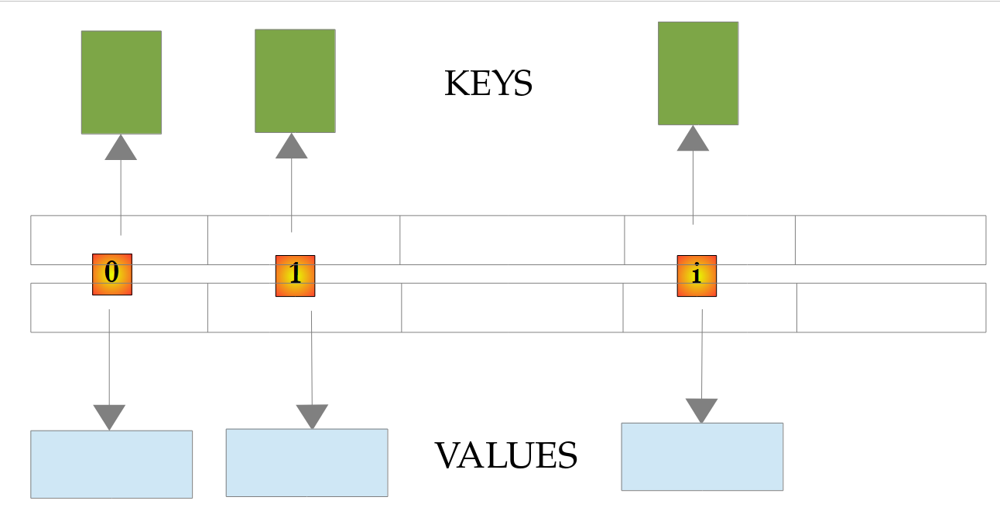

5. 常用的 .NET 类
这里我们介绍 .NET 平台中几个常用的类：字符串、数组、集合、文件和正则表达式。我们还将介绍 LINQ （语言集成查询），2008 年的课程遗漏了它，尽管它自 C# 3 起就已可用：它现在是 C# 中操作集合最常用的方式。在此之前，我们先说明如何查找关于数以千计的可用类的信息。这份指南对任何 C# 开发人员都不可或缺，即使是经验丰富的开发人员也是如此。
本章中的示例——除末尾的示例应用程序外——都是 单文件应用程序 ，通过 [dotnet run file.cs] 运行。它们位于课程代码的 [05-classes-dotnet] 文件夹中，并在法语（fr-FR）区域设置下运行，LINQ 和正则表达式示例除外，它们在美国英语（en-US）区域设置下运行。
5.1. 查找 .NET 类的帮助
2008 年的课程详细介绍了随 Visual Studio 2008 安装的 MSDN 帮助，并附有截图。这种本地帮助已不再提供：.NET 文档现在在线提供，免费，并随每个新版本更新。
5.1.1. 在线文档
起点是 Microsoft 的 learn.microsoft.com 网站。在那里你可以找到：
类的页面，例如 System.String，会显示：
- 该类的命名空间以及包含它的程序集；
- 它的声明、父类以及它所实现的接口；
- 它的构造函数、属性和方法列表，每一项都带有指向详细页面的链接，详细页面显示其各种重载、参数、返回值、可能的异常，并且常常附有示例；
- 关于其用法的说明。
这些页面提供法语（机器翻译）和英语（原文，有时更为精确）两种版本。你可以通过把 URL 中的 [en-us] 替换为 [fr-fr] 在两者之间切换。在搜索引擎中用类的完整名称（“System.Text.StringBuilder”）搜索，通常会直接找到正确的页面。
5.1.2. 编辑器帮助
代码编辑器（Visual Studio、安装了 C# Dev Kit 扩展的 Visual Studio Code、Rider）无需离开代码即可提供即时帮助：
- 自动补全 （IntelliSense）：输入 [aString.] 之后，编辑器会给出该对象的属性和方法列表，并附上每一项的简要说明；
- 工具提示：将鼠标悬停在类、方法或变量名称上，会显示其声明和文档摘要；
- 参数帮助：输入调用的左括号时，编辑器会显示该方法的各种重载以及每个参数的作用；
- 转到定义 （F12 键）：显示类或方法的声明。对于 .NET 类，编辑器会显示根据程序集重建的公共声明及其文档注释；
- 在 Visual Studio 中，在类或方法名称上按 F1 键会打开在线文档中对应的页面。
这些在悬停于某个元素上时可见的文档注释，就是用来生成在线参考的注释。你可以在自己的代码中使用放在类或方法上方的 [/// <summary> ... </summary>] 语法编写类似的注释：编辑器会以同样的方式显示它们。
5.2. 字符串
5.2.1. System.String 类
C# 类型 [string] 是 [System.String] 类的别名。它有许多属性和方法。下面是其中一部分：
成员 | 作用 |
[public int Length { get; }] | 字符串中的字符数 |
[public char this[int index] { get; }] | 第 [index] 个字符：[aString[i]] |
[public bool StartsWith(string value)] | 如果字符串以 [value] 开头则返回 [true] |
[public bool EndsWith(string value)] | 如果字符串以 [value] 结尾则返回 [true] |
[public bool Contains(string value)] | 如果字符串包含 [value] 则返回 [true] |
[public bool Equals(string? value)] | 如果字符串等于 [value] 则返回 [true]；等价于 [aString == value] |
[public int IndexOf(string value)] | [value] 在字符串中第一次出现的位置，未找到则为 -1。另一个重载从位置 [startIndex] 开始搜索 |
[public int IndexOf(char value)] | 同样适用于字符 [value] |
[public int LastIndexOf(char value)] | 与 [IndexOf] 相同，但返回最后一个位置而不是第一个位置 |
[public string Insert(int startIndex, string value)] | 将字符串 [value] 插入到字符串的位置 [startIndex] 处 |
[public static string Join(string separator, params string[] value)] | 类方法：连接 [value] 的各个元素，并以 [separator] 分隔 |
[public string Replace(char oldChar, char newChar)] | 返回字符串的一个副本，其中字符 [oldChar] 已被替换为 [newChar]；重载的方法可将一个字符串替换为另一个字符串 |
[public string[] Split(params char[] separator)] | 该字符串被视为由 [separator] 中的字符分隔的一系列字段；结果是这些字段组成的数组 |
[public string Substring(int startIndex, int length)] | 长度为 [length] 、从位置 [startIndex] 开始的子字符串 |
[public string ToLower()]、[public string ToUpper()] | 将字符串转换为小写、大写 |
[public string Trim()] | 去除字符串的前导和尾随空格（[TrimStart]、[TrimEnd]：只去除一侧） |
需要注意的是，[string] 类型的字符串是不可变的；创建之后就不能修改。当方法返回一个字符串时，该字符串不同于调用该方法的字符串。因此，[s1.Trim()] 返回字符串 [s2]，而 [s1] 和 [s2] 是两个不同的字符串：[s1] 并没有改变。
字符串 [c] 可以视为字符的只读数组：
- [c[i]] 是 [c] 的第 i 个字符（第一个字符的编号为 0）；
- [c.Length] 是 [c] 中的字符数。
程序 [strings-01.cs] 如下：
| // String 类的一些方法
string aString = "the bird flies above clouds";
Display("aString=" + aString);
Display("aString.Length=" + aString.Length);
Display("aString[10]=" + aString[10]);
Display("aString.IndexOf(\"flies\")=" + aString.IndexOf("flies"));
Display("aString.IndexOf(\"x\")=" + aString.IndexOf("x"));
Display("aString.LastIndexOf('a')=" + aString.LastIndexOf('a'));
Display("aString.LastIndexOf('x')=" + aString.LastIndexOf('x'));
Display("aString.Substring(4, 7)=" + aString.Substring(4, 7));
Display("aString.ToUpper()=" + aString.ToUpper());
Display("aString.ToLower()=" + aString.ToLower());
Display("aString.Replace('a', 'A')=" + aString.Replace('a', 'A'));
Display("aString.Insert(9, \"never \")=" + aString.Insert(9, "never "));
// 把字符串拆分为单词（分隔符：空格）
string[] fields = aString.Split();
for (int i = 0; i < fields.Length; i++)
{
Display("fields[" + i + "]=[" + fields[i] + "]");
}
Display("string.Join(\":\", fields)=" + string.Join(":", fields));
Display("\" abc \".Trim()=[" + " abc ".Trim() + "]");
// 原字符串没有被修改
Display("aString=" + aString);
// 一个局部显示方法
static void Display(string msg)
{
Console.WriteLine(msg);
}
|
结果：
| > dotnet run strings-01.cs
aString=the bird flies above clouds
aString.Length=27
aString[10]=l
aString.IndexOf("flies")=9
aString.IndexOf("x")=-1
aString.LastIndexOf('a')=15
aString.LastIndexOf('x')=-1
aString.Substring(4, 7)=bird fl
aString.ToUpper()=THE BIRD FLIES ABOVE CLOUDS
aString.ToLower()=the bird flies above clouds
aString.Replace('a', 'A')=the bird flies Above clouds
aString.Insert(9, "never ")=the bird never flies above clouds
fields[0]=[the]
fields[1]=[bird]
fields[2]=[flies]
fields[3]=[above]
fields[4]=[clouds]
string.Join(":", fields)=the:bird:flies:above:clouds
" abc ".Trim()=[abc]
aString=the bird flies above clouds
|
说明：
- 第 5 行：第 10 号字符，即字符串中的第 11 个字符；
- 第 7、9 行：搜索不成功时返回 -1；
- 第 10 行：从位置 4 开始的 7 个字符；
- 第 14 行：在位置 9 处插入，位于单词“flies”之前；
- 第 16 行：不带参数的 [Split] 会在空白字符 （空格、制表符、换行符等）处拆分字符串。2008 年的课程使用 [Split(null)]，效果相同；
- 第 21 行：静态方法 [Join] 的作用与 [Split] 相反；
- 第 23 行：前面所有的方法都返回新的字符串：[aString] 保持不变（结果的第 21 行）；
- 第 27–29 行：一个局部函数，如第 3 章所述。
5.2.2. Split 和 Join 方法
程序 [strings-02.cs] 更深入地讲解了如何把字符串拆分为字段：
| // Split 和 Join
string line = "one:two::three:";
// 用 ':' 分隔符拆分
string[] fields = line.Split(':');
for (int i = 0; i < fields.Length; i++)
{
Console.WriteLine($"fields[{i}]=[{fields[i]}]");
}
// 反向操作
Console.WriteLine($"join=[{string.Join(":", fields)}]");
// Split 的选项：移除空字段
fields = line.Split(':', StringSplitOptions.RemoveEmptyEntries);
Console.WriteLine($"RemoveEmptyEntries : {fields.Length} fields [{string.Join("|", fields)}]");
// 多个分隔符，并移除字段两侧的空格
string person = " dupont , jean ; 45 ";
fields = person.Split([',', ';'], StringSplitOptions.TrimEntries);
Console.WriteLine($"TrimEntries : {fields.Length} fields [{string.Join("|", fields)}]");
// 两个选项组合使用
string list = " red ,, green , , blue ";
fields = list.Split(',', StringSplitOptions.RemoveEmptyEntries | StringSplitOptions.TrimEntries);
Console.WriteLine($"both options: {fields.Length} fields [{string.Join("|", fields)}]");
// 字符串形式的分隔符
string text = "apple -> pear -> apricot";
fields = text.Split(" -> ");
Console.WriteLine($"string separator: [{string.Join("|", fields)}]");
// Join 接受任何集合，而不只是字符串
int[] numbers = [1, 2, 3, 4];
Console.WriteLine($"Join on integers: {string.Join(" + ", numbers)}");
|
结果：
| > dotnet run strings-02.cs
fields[0]=[one]
fields[1]=[two]
fields[2]=[]
fields[3]=[three]
fields[4]=[]
join=[one:two::three:]
RemoveEmptyEntries : 3 fields [one|two|three]
TrimEntries : 3 fields [dupont|jean|45]
both options: 3 fields [red|green|blue]
string separator: [apple|pear|apricot]
Join on integers: 1 + 2 + 3 + 4
|
说明：
- 第 4 行：字段由字符 [:] 分隔。两个连续的 [:] 字符，或字符串末尾的单个 [:] ，都会界定出一个空字段：由此得到 5 个字段，其中 2 个为空（结果的第 4 行和第 6 行）。[Join] 会重建原始字符串；
- [Split] 方法有许多重载。2008 年的版本 [Split(char[] separator)] 现在写作 [Split(params char[] separator)]：关键字 [params] 允许逐个传入分隔符——[Split(':')] 或 [Split(',', ';')]——而无需创建数组；
- 第 13 行：枚举 [StringSplitOptions] 用于修改字段的拆分方式。[RemoveEmptyEntries] 会移除空字段；
- 第 18 行：[TrimEntries] （.NET 5）会移除每个字段两侧的空格。这里的分隔符以集合表达式 [',', ';'] 传入；
- 第 23 行：两个选项使用 [|] 运算符组合。空格会在检查空字段之前被移除：两个逗号之间仅由两个空格构成的字段会被删除；
- 第 28 行：分隔符可以是由多个字符组成的字符串；
- 第 33 行：[Join] 接受任意类型元素的集合；每个元素都通过其 [ToString] 方法转换为字符串。
5.2.3. 搜索与比较字符串
字符串比较比看上去要微妙：是否应区分大小写？“éclair”应排在“essay”之前还是之后？程序 [strings-03.cs] 展示了各种搜索与比较方法：
| // 搜索和比较字符串
string title = "Learning the C# language with .NET";
// Contains、StartsWith、EndsWith：默认精确比较
Console.WriteLine($"Contains(\"language\") : {title.Contains("language")}");
Console.WriteLine($"Contains(\"LANGUAGE\") : {title.Contains("LANGUAGE")}");
Console.WriteLine($"StartsWith(\"Learning\") : {title.StartsWith("Learning")}");
Console.WriteLine($"EndsWith('T') : {title.EndsWith('T')}");
// 比较模式通过 StringComparison 枚举指定
Console.WriteLine($"Contains(\"LANGUAGE\", OrdinalIgnoreCase) : {title.Contains("LANGUAGE", StringComparison.OrdinalIgnoreCase)}");
Console.WriteLine($"StartsWith(\"learning\", OrdinalIgnoreCase) : {title.StartsWith("learning", StringComparison.OrdinalIgnoreCase)}");
// 相等：== 运算符比较字符串的内容
string answer = "YES";
Console.WriteLine($"answer == \"yes\" : {answer == "yes"}");
Console.WriteLine($"string.Equals(answer, \"yes\", OrdinalIgnoreCase) : {string.Equals(answer, "yes", StringComparison.OrdinalIgnoreCase)}");
// 字母顺序：按区域性或按字符码比较
string a = "éclair", b = "essay";
Console.WriteLine($"Compare(\"{a}\", \"{b}\", CurrentCulture) : {string.Compare(a, b, StringComparison.CurrentCulture)}");
Console.WriteLine($"Compare(\"{a}\", \"{b}\", Ordinal) : {string.Compare(a, b, StringComparison.Ordinal)}");
// 空字符串或空白字符串
string? empty = null;
string blank = " ";
Console.WriteLine($"IsNullOrEmpty(null) : {string.IsNullOrEmpty(empty)}");
Console.WriteLine($"IsNullOrEmpty(\" \") : {string.IsNullOrEmpty(blank)}");
Console.WriteLine($"IsNullOrWhiteSpace(\" \") : {string.IsNullOrWhiteSpace(blank)}");
// 填充
Console.WriteLine($"[{"abc".PadLeft(8)}] [{"abc".PadRight(8, '.')}] [{new string('-', 8)}]");
|
结果：
| > dotnet run strings-03.cs
Contains("language") : True
Contains("LANGUAGE") : False
StartsWith("Learning") : True
EndsWith('T') : True
Contains("LANGUAGE", OrdinalIgnoreCase) : True
StartsWith("learning", OrdinalIgnoreCase) : True
answer == "yes" : False
string.Equals(answer, "yes", OrdinalIgnoreCase) : True
Compare("éclair", "essay", CurrentCulture) : -1
Compare("éclair", "essay", Ordinal) : 132
IsNullOrEmpty(null) : True
IsNullOrEmpty(" ") : False
IsNullOrWhiteSpace(" ") : True
[ abc] [abc.....] [--------]
|
说明：
- 第 5–8 行：[Contains]、[StartsWith] 和 [EndsWith] 默认进行逐字符的精确比较：因此找不到“LANGUAGE”；
- 第 11–12 行：类型为 [StringComparison] 的参数用于指定比较模式。最常用的取值有：
- [Ordinal]：按字符编码比较；
- [OrdinalIgnoreCase]：同上，但忽略大小写；
- [CurrentCulture]、[CurrentCultureIgnoreCase]：按本机语言的规则比较；
- [InvariantCulture]：基于与机器无关的规则进行比较；
- 第 16 行：运算符 [] 与方法 [Equals] 一样，比较的是字符串的内容。这是与 Java 的一个重要区别，在 Java 中 [] 比较的是引用；
- 第 17 行：[Equals] 的静态形式也接受 [StringComparison]。这是测试从键盘输入的大写或小写“yes”答复的正确方式；
- 第 21–22 行：[string.Compare] 根据第一个字符串排在第二个之前、与之相等还是排在其后，返回负整数、零或正整数。在法语中，“éclair”排在“essay”之前（字母“é”与“e”归为一类，见结果的第 10 行）。在序数比较中，“éclair”排在“essay”之后，因为第一个字符“é”的编码（233）大于字符“e”的编码（101）：此处的序数比较返回两个编码之差 132。我们将使用文化顺序对面向用户的单词排序，并使用序数顺序比较技术标识符（文件名、键等）；
- 第 27–29 行：用于测试字符串是缺失（[null]）、为空还是仅包含空格的两个静态方法；
- 第 32 行：[PadLeft] 和 [PadRight] 将字符串填充到指定长度；构造函数 [new string('-', 8)] 用于重复一个字符。
5.2.4. 插值与格式
字符串插值 [$"..."] （C# 6）自本课程开始起就一直在使用。与 [string.Format] 方法一样，它为每个表达式接受一个宽度和一个格式：[{expression,width:format}]。程序 [strings-04.cs] 给出了相关示例，以及 C# 11 的原始字符串：
| // 插值、格式和原始字符串
string name = "dupont";
int age = 45;
decimal salary = 2345.678m;
double rate = 0.0525;
DateTime date = new(2026, 10, 3, 14, 5, 9);
// 简单插值
Console.WriteLine($"{name} is {age} years old");
// {expression,width:format}：width > 0 右对齐，< 0 左对齐
Console.WriteLine($"[{name,10}] [{name,-10}] [{age,5}]");
Console.WriteLine($"[{salary,12:F2}] [{salary,-12:F1}] [{salary:N2}] [{salary:C}]");
Console.WriteLine($"[{rate:P2}] [{age:D5}] [{age:X}] [{1234567:N0}]");
Console.WriteLine($"[{date:dd/MM/yyyy}] [{date:HH:mm:ss}] [{date:dddd d MMMM yyyy}]");
// 任意表达式，这里是括在括号中的条件表达式
Console.WriteLine($"{name} is {(age >= 18 ? "an adult" : "a minor")}");
// string.Format 方法和早期 C# 版本中的 {n} 写法
Console.WriteLine(string.Format("{0} is {1} years old and earns {2:F2} euros", name, age, salary));
// 对齐的表格
string[] products = ["apple", "pear", "apricot"];
decimal[] prices = [2.5m, 3.15m, 12m];
for (int i = 0; i < products.Length; i++)
{
Console.WriteLine($"{products[i],-10}|{prices[i],8:F2} €");
}
// 逐字字符串：\ 不是转义字符
string path = @"C:\data\course\infos.txt";
Console.WriteLine(path);
// 原始字符串（C# 11）：由至少三个双引号界定，可跨多行
string json = """
{
"name": "dupont",
"path": "C:\data"
}
""";
Console.WriteLine(json);
// 插值原始字符串：使用 $$ 时，单个花括号保持字面含义
string json2 = $$"""{ "name": "{{name}}", "age": {{age}} }""";
Console.WriteLine(json2);
|
结果：
| > dotnet run strings-04.cs
dupont is 45 years old
[ dupont] [dupont ] [ 45]
[ 2345,68] [2345,7 ] [2 345,68] [2 345,68 €]
[5,25 %] [00045] [2D] [1 234 567]
[03/10/2026] [14:05:09] [samedi 3 octobre 2026]
dupont is an adult
dupont is 45 years old and earns 2345,68 euros
apple | 2,50 €
pear | 3,15 €
apricot | 12,00 €
C:\data\course\infos.txt
{
"name": "dupont",
"path": "C:\data"
}
{ "name": "dupont", "age": 45 }
|
说明：
- 第 11 行：正的宽度使值在 10 个字符的字段内右对齐；负的宽度则使其左对齐；
- 第 12–14 行：最常用的格式：
格式 | 含义 | 示例（fr-FR） |
[F2] | 定点数，保留 2 位小数 | 2345,68 |
[N2] | 同上，带千位分隔符 | 2 345,68 |
[C] | 当前区域性的货币金额 | 2 345,68 € |
[P2] | 百分比（值会乘以 100） | 5,25 % |
[D5] | 至少 5 位的整数，以零填充 | 00045 |
[X] | 十六进制整数 | 2D |
[dd/MM/yyyy]、[HH:mm:ss] | 日期和时间（MM：月，mm：分钟） | 03/10/2026, 14:05:09 |
[dddd d MMMM yyyy] | 完整拼写的星期与月份 | samedi 3 octobre 2026 |
- 数字和日期按当前区域设置进行格式化，此处为 fr-FR：小数点为逗号，千位分隔符为空格，日期和月份名称为法语；
- 第 16 行：插值内部的条件表达式必须用括号括起来，因为字符 [:] 会在该处引入格式；
- 第 19 行：用于 [{0}]、[{1}]…… 的记法 [string.Format] 是 2008 年课程中使用的记法（[Console.WriteLine] 也接受相同的参数）。它至今仍很常见；不过插值的可读性更好；
- 第 24–26 行：通过宽度可以将数据按列显示；
- 第 30 行：逐字字符串 [@"..."] 不把 [\] 视为转义字符。这对于 Windows 路径和正则表达式很有用；
- 第 34–39 行：原始字符串（C# 11）由至少三个引号界定。它可以跨越多行，并且可以包含未转义的引号和 [\]。结束引号的缩进会从每一行中移除：JSON 文本显示时不带代码边距的 4 个空格；
- 第 42 行：原始字符串可以进行插值。使用 [$$] 时，插值表达式写在双花括号之间 [{{name}}]，而单花括号（在 JSON 之类的文本中很常见）仍是普通字符。
5.2.5. System.Text.StringBuilder 类
前面提到，[String] 类中作用于字符串 [s1] 的方法会返回另一个字符串 [s2]。[System.Text.StringBuilder] 类允许修改字符串，而无需为每次操作创建新的字符串。当通过多次连续追加来构造字符串时，它可以避免大量生命周期极短的字符串，从而提高性能。
该类支持多种构造函数：
构造函数 | 作用 |
[StringBuilder()] | 默认构造函数 |
[StringBuilder(string value)] | 构造并用 [value] 初始化 |
[StringBuilder(string value, int capacity)] | 构造并用 [value] 初始化，初始容量为 [capacity] 个字符 |
[StringBuilder] 对象将其字符存储在一块内存区域中，该区域的大小（即其容量）会随文本增长而自动调整。默认情况下，初始容量为 16 个字符。第三个构造函数允许指定初始容量。程序 [strings-05.cs] 演示了容量这一概念：
| using System.Text;
// StringBuilder 的大小和容量
var str = new StringBuilder("test");
Console.WriteLine($"size={str.Length}, capacity={str.Capacity}");
for (int i = 0; i < 10; i++)
{
str.Append("test");
Console.WriteLine($"size={str.Length}, capacity={str.Capacity}");
}
// 初始容量为 10 的 StringBuilder
var str2 = new StringBuilder("test", 10);
Console.WriteLine($"size={str2.Length}, capacity={str2.Capacity}");
for (int i = 0; i < 10; i++)
{
str2.Append("test");
Console.WriteLine($"size={str2.Length}, capacity={str2.Capacity}");
}
|
结果：
| > dotnet run strings-05.cs
size=4, capacity=16
size=8, capacity=16
size=12, capacity=16
size=16, capacity=16
size=20, capacity=32
size=24, capacity=32
size=28, capacity=32
size=32, capacity=32
size=36, capacity=64
size=40, capacity=64
size=44, capacity=64
size=4, capacity=10
size=8, capacity=10
size=12, capacity=20
size=16, capacity=20
size=20, capacity=20
size=24, capacity=40
size=28, capacity=40
size=32, capacity=40
size=36, capacity=40
size=40, capacity=40
size=44, capacity=80
|
说明：
- 第 4 行：创建一个初始容量为 16 的 [StringBuilder] 对象；
- 第 5 行：[Length] 是当前的字符数；[Capacity] 是对象在需要扩展内存区域之前能够容纳的字符数；
- 第 8 行：[Append] 将字符串添加到文本末尾；
- 第 12 行：创建一个初始容量为 10 的 [StringBuilder] 对象。
结果表明，容量不足时会加倍：16、32、64（结果的第 6 行和第 10 行），第二个对象则是 10、20、40、80。这与 2008 年的结果相同。如果事先大致知道文本的大小，在构造时设置容量即可避免多次扩容。
以下是该类的一些方法：
方法 | 作用 |
[StringBuilder Append(string value)] | 将 [value] 添加到文本末尾。已重载以接受类型 [int]、[double]、[decimal]、[char]…… 以及插值字符串 |
[StringBuilder AppendLine()] | 添加一个换行符（重载版本会添加一个字符串及其后的换行符） |
[StringBuilder AppendJoin(string separator, params string[] values)] | 添加 [values] 的各元素，以 [separator] 分隔 |
[StringBuilder Insert(int index, string value)] | 将 [value] 插入到位置 [index] ；已像 [Append] 一样重载 |
[StringBuilder Remove(int index, int length)] | 删除 [length] 个字符，起始位置为 [index] |
[StringBuilder Replace(string oldValue, string newValue)] | 将 [oldValue] 替换为 [newValue]；某个重载版本用于替换字符 |
[string ToString()] | 将文本转换为字符串 [string] |
程序 [strings-06.cs] 使用了这些方法：
| using System.Text;
// StringBuilder 的方法返回 StringBuilder 对象本身：可以链式调用
var str3 = new StringBuilder("test");
Console.WriteLine(str3.Append("abCD").Insert(2, "xyZT").Remove(0, 2).Replace("xy", "XY"));
// 逐段构建字符串
var lines = new StringBuilder();
for (int i = 1; i <= 3; i++)
{
lines.Append("line ").Append(i).AppendLine();
}
// AppendJoin：相当于 string.Join
lines.AppendJoin(", ", "a", "b", "c").AppendLine();
// Append 也接受插值字符串
int total = 42;
lines.Append($"total={total,6:F1}");
// 最终的字符串
string result = lines.ToString();
Console.WriteLine(result);
Console.WriteLine($"{result.Length} characters");
|
结果：
| > dotnet run strings-06.cs
XYZTstabCD
line 1
line 2
line 3
a, b, c
total= 42,0
41 characters
|
说明：
- 第 5 行：修改方法返回 [StringBuilder] 对象本身，因此可以链式调用。我们来逐步跟踪：“test”变为“testabCD”（[Append]），然后变为“texyZTstabCD”（[Insert] 在位置 2），再变为“xyZTstabCD”（[Remove] 删除前 2 个字符），最后变为“XYZTstabCD”（[Replace]）。[Console.WriteLine] 通过调用对象的 [ToString] 方法来显示该对象；
- 第 9–11 行：通过连续追加来构造多行文本：这是 [StringBuilder] 的典型用法；
- 第 17 行：[Append] 接受插值字符串，包括宽度和格式；
- 第 19 行：最终文本以 [string] 字符串的形式获得。
对于少量拼接，[+] 运算符或插值就足够了：编译器会对其进行优化。当追加次数很多或未知时（典型情形是在循环中），就需要使用 [StringBuilder]。
5.2.6. 字符串的视图：Span<char>
.NET Core 2.1（2018 年）引入了类型 [Span<T>] 和 [ReadOnlySpan<T>]。[ReadOnlySpan<char>] 对象是对现有字符序列（例如字符串的一部分）的视图：它并不包含字符的副本，只提供访问这些字符的途径。因此，使用视图提取字符串的一部分不会创建新的字符串。程序 [strings-07.cs] 比较了解析“姓:名:年龄”格式行的两种方式：
| // ReadOnlySpan<char>：字符串某一部分的“视图”，无需复制
string line = "dupont:jean:45";
// 使用 Substring：每个字段都是在内存中分配的新字符串
int p1 = line.IndexOf(':');
int p2 = line.LastIndexOf(':');
string lastName = line.Substring(0, p1);
int age = int.Parse(line.Substring(p2 + 1));
Console.WriteLine($"Substring : last name={lastName}, age={age}");
// 使用视图：不会创建中间字符串
ReadOnlySpan<char> view = line.AsSpan();
ReadOnlySpan<char> lastNameView = view[..p1]; // 字符 0 到 p1-1
ReadOnlySpan<char> ageView = view[(p2 + 1)..]; // 从 p2+1 到末尾
// int.Parse 接受视图
age = int.Parse(ageView);
Console.WriteLine($"Span : last name={lastNameView}, age={age}, length of the view={lastNameView.Length}");
// 视图可以与字符串比较而无需复制
Console.WriteLine($"the last name starts with \"du\": {lastNameView.StartsWith("du")}");
// 只有在确实需要时才创建字符串
string firstName = view[(p1 + 1)..p2].ToString();
Console.WriteLine($"first name={firstName}");
|
结果：
| > dotnet run strings-07.cs
Substring : last name=dupont, age=45
Span : last name=dupont, age=45, length of the view=6
the last name starts with "du": True
first name=jean
|
说明：
- 第 7–8 行：每次调用 [Substring] 都会在内存中创建一个新字符串，即使像年龄那样只是短暂使用；
- 第 12 行：[AsSpan] 返回整个字符串的视图；
- 第 13–14 行：[start..end] 范围（C# 8，在第 3 章讲数组时已介绍）同样适用于视图：得到两个新的视图，且无需复制；
- 第 16 行：.NET 中的许多方法接受视图而不是字符串（[Parse]、[TryParse]、[StartsWith]、[Contains]、[Equals]……）；
- 第 21 行：只有在确实需要时才从视图创建字符串。
视图是一种优化工具，在 .NET 自身内部被广泛使用：这是近期版本明显快于 2008 年 .NET Framework 的原因之一。视图只能存在于执行栈上：例如，它不能作为类的字段。对于普通程序，[string] 和 [Substring] 完全够用：只应在已确认对性能至关重要的代码中使用视图。我们不再深入。
5.3. 数组
5.3.1. Array 类
数组派生自 [System.Array] 类。该类提供了多种方法，用于对数组排序、在数组中查找元素、调整数组大小等。我们将介绍其中一些属性和方法。它们几乎都是重载的，即存在不同的变体。每个数组都继承这些成员。
属性：
属性 | 作用 |
[public int Length { get; }] | 数组中元素的总数，与维数无关 |
[public int Rank { get; }] | 数组的维数 |
方法：
方法 | 作用 |
[public static int BinarySearch<T>(T[] array, T value)] | 返回 [value] 在 [array] 中的位置（该数组必须已排序）；如果 [value] 不存在，则返回负数 |
[public static void Clear(Array array, int index, int length)] | 将 [length] 个元素（位于 [array] 中从索引 [index] 开始）设为默认值：数值为 0，布尔值为 [false] ，引用为 [null] |
[public static void Copy(Array source, Array destination, int length)] | 将前 [length] 个元素从 [source] 复制到 [destination] |
[public static void Fill<T>(T[] array, T value)] | 将 [value] 赋给 [array] 的所有元素 |
[public int GetLength(int dimension)] | 数组第 [dimension] 维中的元素个数 |
[public static int IndexOf<T>(T[] array, T value)] | 返回 [value] 在 [array] 中的位置；如果未找到 [value]，则返回 -1；[LastIndexOf] 返回最后一次出现的位置 |
[public static void Resize<T>(ref T[]? array, int newSize)] | 将 [array] 的大小调整为 [newSize] 个元素；已有的元素会被保留 |
[public static void Reverse(Array array)] | 反转 [array] 中元素的顺序 |
[public static void Sort<T>(T[] array)] | 按元素的自然顺序对 [array] 排序；某个重载方法接受一个定义顺序的 [IComparer<T>] 对象（第 4 章） |
程序 [arrays-01.cs] 演示了 [Array] 类某些方法的用法：
| // Array 类：调整大小、排序、搜索
// 读取键盘输入的数组元素
double[] elements = Input();
// 显示未排序的数组
Display("Unsorted array", elements);
// 在未排序的数组中线性搜索
Search(elements, SearchType.Linear);
// 对数组排序
Array.Sort(elements);
// 显示已排序的数组
Display("Sorted array", elements);
// 在已排序的数组中二分搜索
Search(elements, SearchType.Binary);
// 输入数组的值：返回创建的数组
static double[] Input()
{
// 开始时数组为空
double[] elements = [];
// 数组元素的输入循环
while (true)
{
Console.Write($"Element (real) {elements.Length} of the array (nothing to finish): ");
string answer = (Console.ReadLine() ?? "").Trim();
// 如果输入空字符串则结束输入
if (answer == "")
{
break;
}
// 检查输入
if (!double.TryParse(answer, out double element))
{
Console.WriteLine("Incorrect input, try again");
continue;
}
// 多一个元素：把数组扩大一格
Array.Resize(ref elements, elements.Length + 1);
// 并把新元素存入其中
elements[^1] = element;
}
return elements;
}
// 显示数组元素的泛型方法
static void Display<T>(string text, T[] elements)
{
Console.WriteLine(text.PadRight(50, '-'));
foreach (T element in elements)
{
Console.WriteLine(element);
}
}
// 在数组中搜索键盘输入的元素
static void Search(double[] elements, SearchType type)
{
while (true)
{
Console.Write("Element searched for (nothing to stop): ");
string answer = (Console.ReadLine() ?? "").Trim();
// 完成了吗？
if (answer == "")
{
break;
}
// 检查
if (!double.TryParse(answer, out double element))
{
Console.WriteLine("Error, try again...");
continue;
}
// 我们在数组中搜索该元素
int i = type == SearchType.Binary
? Array.BinarySearch(elements, element) // 已排序的数组
: Array.IndexOf(elements, element); // 任意数组
// 显示答案
Console.WriteLine(i >= 0 ? $"Found at position {i}" : $"Not in the array ({i})");
}
}
// 搜索类型
enum SearchType { Linear, Binary }
|
说明：
- 第 17–42 行：方法 [Input] 输入从键盘键入的数组元素。由于事先不知道元素个数，程序从一个空数组开始（第 20 行），并在每次新输入时将数组扩展一个元素（第 38 行）。[Resize] 实际上会创建一个新数组，把旧数组的元素复制进去，并将其引用存入通过 [ref] 传入的变量。更高效的算法是按每 N 个元素为一组来分配空间。数组并不是为调整大小而设计的：这种场景更适合使用列表 [List<T>]，稍后我们会看到；
- 第 40 行：[^1] 指数组的最后一个元素（从末尾开始索引，C# 8）；
- 在 2008 年的课程中，[Input] 是一个带 [out] 参数的方法；现代版本直接返回创建的数组，更为自然；
- 第 56–78 行：方法 [Search] 在数组中搜索从键盘输入的元素。对于未排序的数组，使用 [IndexOf] （第 76 行）进行线性搜索，逐个检查元素。对于已排序的数组，使用 [BinarySearch] （第 75 行）进行二分搜索，每一步都将搜索范围减半：在一百万个元素中查找某个元素只需约二十次比较；
- 第 10 行：对数组排序。这里使用只有一个参数（待排序数组）的 [Sort] 变体。此时用于比较数组元素的排序关系是这些元素的隐式关系：在本例中即数字的自然顺序；
- 第 46–51 行：一个泛型方法，用于显示任意类型 [T] 的元素数组。
结果：
| > dotnet run arrays-01.cs
Element (real) 0 of the array (nothing to finish): 3,6
Element (real) 1 of the array (nothing to finish): 7,4
Element (real) 2 of the array (nothing to finish): -1,5
Element (real) 3 of the array (nothing to finish): x
Incorrect input, try again
Element (real) 3 of the array (nothing to finish): -7
Element (real) 4 of the array (nothing to finish):
Unsorted array------------------------------------
3,6
7,4
-1,5
-7
Element searched for (nothing to stop): 7,4
Found at position 1
Element searched for (nothing to stop): 0
Not in the array (-1)
Element searched for (nothing to stop):
Sorted array--------------------------------------
-7
-1,5
3,6
7,4
Element searched for (nothing to stop): 7,4
Found at position 3
Element searched for (nothing to stop): 0
Not in the array (-3)
Element searched for (nothing to stop):
|
当要查找的元素不存在时，[IndexOf] 返回 -1，而 [BinarySearch] 返回负数（第 27 行）：这是为保持数组有序而应插入该元素的位置的按位取反（[~i]）。此处，[~(-3)] 等于 2：数字 0 应插入到位置 2，即 -1.5 与 3.6 之间。注意：对未排序的数组使用 [BinarySearch] 会返回毫无意义的结果。
5.3.2. Array 类的其他方法
程序 [arrays-02.cs] 演示了 [Array] 类的其他方法：
| // Array 类的其他方法
int[] numbers = [40, 10, 30, 20, 50];
Display("numbers", numbers);
// Reverse：就地反转元素的顺序
Array.Reverse(numbers);
Display("after Reverse", numbers);
// 对数组的一部分排序：从索引 1 开始的 3 个元素
Array.Sort(numbers, 1, 3);
Display("after Sort(numbers, 1, 3)", numbers);
// Copy：把 3 个元素复制到另一个数组
int[] copy = new int[5];
Array.Copy(numbers, copy, 3);
Display("copy", copy);
// Fill：用一个值填充数组；Clear：把元素重置为默认值
Array.Fill(copy, 7);
Display("after Fill(copy, 7)", copy);
Array.Clear(copy, 1, 2);
Display("after Clear(copy, 1, 2)", copy);
// 对字符串数组使用 IndexOf、LastIndexOf
string[] colors = ["red", "green", "blue", "green"];
Console.WriteLine($"IndexOf(green)={Array.IndexOf(colors, "green")}, LastIndexOf(green)={Array.LastIndexOf(colors, "green")}, IndexOf(black)={Array.IndexOf(colors, "black")}");
// 字符串数组排序：按当前区域性的字母顺序
Array.Sort(colors);
Display("sorted colors", colors);
// 二维数组：Rank、Length、GetLength
int[,] matrix = new int[2, 3];
Console.WriteLine($"Rank={matrix.Rank}, Length={matrix.Length}, GetLength(0)={matrix.GetLength(0)}, GetLength(1)={matrix.GetLength(1)}");
// 在一行上显示数组
static void Display<T>(string text, T[] elements)
{
Console.WriteLine($"{text,-28}: [{string.Join(", ", elements)}]");
}
|
结果：
| > dotnet run arrays-02.cs
numbers : [40, 10, 30, 20, 50]
after Reverse : [50, 20, 30, 10, 40]
after Sort(numbers, 1, 3) : [50, 10, 20, 30, 40]
copy : [50, 10, 20, 0, 0]
after Fill(copy, 7) : [7, 7, 7, 7, 7]
after Clear(copy, 1, 2) : [7, 0, 0, 7, 7]
IndexOf(green)=1, LastIndexOf(green)=3, IndexOf(black)=-1
sorted colors : [blue, green, green, red]
Rank=2, Length=6, GetLength(0)=2, GetLength(1)=3
|
说明：
- 第 6 行：[Reverse] 反转数组本身中元素的顺序；
- 第 10 行：从位置 1 开始仅对 3 个元素排序：20、30、10 变为 10、20、30；
- 第 15 行：将 [numbers] 的前 3 个元素复制到 [copy]中，其他元素保持初始值 0；
- 第 19–21 行：[Fill] 填充数组；[Clear] 从位置 1 开始将 2 个元素重置为 0；
- 第 29 行：字符串按当前区域性的字母顺序排序；
- 第 34 行：对于二维数组，[Rank] 为 2，[Length] 是元素总数，而 [GetLength(i)] 是第 i 维中的元素个数；
- 第 39 行：[string.Join] 将数组显示在一行中。
稍后将讨论的 LINQ 提供了其他搜索、排序或转换数组元素的方式。
5.4. 泛型集合
除数组外，还有各种用于存储元素集合的类。泛型集合随 .NET 2.0 引入，位于 [System.Collections.Generic] 命名空间中，该命名空间属于隐式 [using] 命名空间。我们先介绍两种常用的集合——列表和字典——然后再简要介绍其他集合。
[System.Collections] 命名空间包含这些集合较早的非泛型版本，可追溯到 .NET 1.0：[ArrayList] （列表）、[Hashtable]（字典）……2008 年的课程中仍然讲解 [ArrayList]。这些类现在已过时：它们存储类型为 [object] 的引用，这就要求对读取的元素进行类型转换，并将数字装箱为对象，带来相应的内存和时间开销。泛型集合没有这些缺点：*[List<int>] 将其整数直接存储在内部的 *[int[]] 数组中，并且编译器会检查所添加元素的类型。[ArrayList] 和 [Hashtable] 不应再用于新代码。
5.4.1. 泛型类 List<T>
[System.Collections.Generic.List<T>] 类可用来实现由 [T] 对象构成、大小在程序运行期间可变的集合。[List<T>] 类型的对象的处理方式几乎与数组相同。因此，列表 [l] 的第 i 个元素记作 [l[i]]。
对于类型为 [List<T>] 的列表，如果 [T] 是类，则列表存储 [T] 类型对象的引用，就像对象数组一样；如果 [T] 是值类型（[int]、[double]、结构体……），则列表中存储的就是这些值本身。
以下是泛型列表的一些属性和方法。
属性：
属性 | 作用 |
[public int Count { get; }] | 列表中的元素个数 |
[public int Capacity { get; set; }] | 列表在扩展之前可容纳的元素个数。这种扩展是自动进行的。容量这一概念与 [StringBuilder] 类中所述的类似 |
方法：
方法 | 作用 |
[public void Add(T item)] | 将 [item] 添加到列表末尾 |
[public void AddRange(IEnumerable<T> collection)] | 将 [collection] 的元素添加到列表末尾 |
[public int BinarySearch(T item)] | 如果 [item] 存在于已排序的列表中，则返回其位置；否则返回负数 |
[public void Clear()] | 移除列表中的所有元素 |
[public bool Contains(T item)] | 返回 [true] ，如果 [item] 在列表中，否则返回 [false] |
[public List<T> GetRange(int index, int count)] | 返回一个新列表，包含 [count] 个元素，起始位置为 [index] |
[public int IndexOf(T item)] | 返回 [item] 在列表中的位置；如果未找到 [item] ，则返回 -1 |
[public void Insert(int index, T item)] | 将 [item] 插入列表的位置 [index] 处 |
[public bool Remove(T item)] | 从列表中移除 [item] 的第一个匹配项；操作成功时返回 [true]，否则返回 [false] |
[public void RemoveAt(int index)] | 从列表中移除第 [index] 项 |
[public void Reverse()] | 反转列表中各项的顺序 |
[public void Sort()] | 按自然顺序对列表排序；某个重载版本接受一个 [IComparer<T>] |
[public T[] ToArray()] | 以数组形式返回列表元素 |
让我们回顾前面用数组处理过的示例，现在改用类型为 [List<double>] 的对象来处理。由于列表与数组相似，代码改动很小。以下是程序 [collections-01.cs]：
| // List<T> 类：用列表重写的程序 arrays-01.cs
// 读取键盘输入的列表元素
List<double> elements = Input();
// 元素个数和容量
Console.WriteLine($"The list has {elements.Count} elements and a capacity of {elements.Capacity} elements");
// 显示未排序的列表
Display("Unsorted list", elements);
// 在未排序的列表中线性搜索
Search(elements, SearchType.Linear);
// 对列表排序
elements.Sort();
// 显示已排序的列表
Display("Sorted list", elements);
// 在已排序的列表中二分搜索
Search(elements, SearchType.Binary);
// 输入列表的值：返回创建的列表
static List<double> Input()
{
// 开始时列表为空
List<double> elements = new();
// 列表元素的输入循环
while (true)
{
Console.Write($"Element (real) {elements.Count} of the list (nothing to finish): ");
string answer = (Console.ReadLine() ?? "").Trim();
// 如果输入空字符串则结束输入
if (answer == "")
{
break;
}
// 检查输入
if (!double.TryParse(answer, out double element))
{
Console.WriteLine("Incorrect input, try again");
continue;
}
// 列表多一个元素：它会自动增长
elements.Add(element);
}
return elements;
}
// 显示任意序列元素的泛型方法
static void Display<T>(string text, IEnumerable<T> elements)
{
Console.WriteLine(text.PadRight(50, '-'));
foreach (T element in elements)
{
Console.WriteLine(element);
}
}
// 在列表中搜索键盘输入的元素
static void Search(List<double> elements, SearchType type)
{
while (true)
{
Console.Write("Element searched for (nothing to stop): ");
string answer = (Console.ReadLine() ?? "").Trim();
// 完成了吗？
if (answer == "")
{
break;
}
// 检查
if (!double.TryParse(answer, out double element))
{
Console.WriteLine("Error, try again...");
continue;
}
// 我们在列表中搜索该元素
int i = type == SearchType.Binary
? elements.BinarySearch(element) // 已排序的列表
: elements.IndexOf(element); // 任意列表
// 显示答案
Console.WriteLine(i >= 0 ? $"Found at position {i}" : $"Not in the list ({i})");
}
}
// 搜索类型
enum SearchType { Linear, Binary }
|
说明：
- 第 22 行：创建一个空列表。[new()] （C# 9）是 [new List<double>()] 的简写形式：类型由变量声明推断；
- 第 40 行：不再需要处理大小调整；列表会自动扩展；
- 第 6 行：列表中的元素个数及其容量；
- 第 12、75、76 行：方法 [Sort]、[BinarySearch]和 [IndexOf] 现在是列表的实例方法，而 [Array] 的相应方法是静态方法；
- 第 46–51 行：泛型方法 [Display<T>] 接受两个参数：
- 第一个是要输出的文本；
- 第二个是实现泛型接口 [IEnumerable<T>] 的对象：
| public interface IEnumerable<out T> : IEnumerable
{
IEnumerator<T> GetEnumerator();
}
|
结构 [foreach (T element in elements)] 对任何实现了 [elements] 接口的 [IEnumerable<T>] 对象都有效。数组和列表都实现了该接口。因此，[Display] 方法既适用于显示数组，也适用于显示列表。我们稍后还会回到这个位于 LINQ 核心的接口。
结果：
| > dotnet run collections-01.cs
Element (real) 0 of the list (nothing to finish): 3,6
Element (real) 1 of the list (nothing to finish): 7,4
Element (real) 2 of the list (nothing to finish): -1,5
Element (real) 3 of the list (nothing to finish): -7
Element (real) 4 of the list (nothing to finish):
The list has 4 elements and a capacity of 4 elements
Unsorted list-------------------------------------
3,6
7,4
-1,5
-7
Element searched for (nothing to stop): 7,4
Found at position 1
Element searched for (nothing to stop): 0
Not in the list (-1)
Element searched for (nothing to stop):
Sorted list---------------------------------------
-7
-1,5
3,6
7,4
Element searched for (nothing to stop): 7,4
Found at position 3
Element searched for (nothing to stop): 0
Not in the list (-3)
Element searched for (nothing to stop):
|
结果与使用数组时相同。这里列表的容量是 4（第 7 行）：从 0 开始，第一次添加时增加到 4；第五次添加时会增加到 8，像 [StringBuilder] 的容量一样翻倍。
5.4.2. List<T> 的方法与集合表达式
程序 [collections-02.cs] 使用了列表的其他方法，以及 C# 12 的集合表达式 ，我们在第 3 章讲数组时已经见过它：
| // List<T> 的主要方法和集合表达式
// 由集合表达式初始化的列表（C# 12）
List<string> cities = ["Paris", "Lyon", "Angers"];
Display("start", cities);
// 添加
cities.Add("Nantes"); // 添加到末尾
cities.Insert(1, "Brest"); // 添加到位置 1
cities.AddRange(["Lille", "Tours"]); // 在末尾添加多个元素
Display("after Add, Insert, AddRange", cities);
// 按索引访问，可读可写
cities[0] = "Marseille";
Console.WriteLine($"cities[0]={cities[0]}, cities[^1]={cities[^1]}, Count={cities.Count}");
// 搜索
Console.WriteLine($"Contains(\"Lyon\")={cities.Contains("Lyon")}, IndexOf(\"Angers\")={cities.IndexOf("Angers")}, IndexOf(\"Nice\")={cities.IndexOf("Nice")}");
// 移除
bool removed = cities.Remove("Lyon"); // 按值
cities.RemoveAt(0); // 按位置
Display($"after Remove ({removed}), RemoveAt(0)", cities);
// 排序、反转、元素范围
cities.Sort();
Display("after Sort", cities);
cities.Reverse();
Display("after Reverse", cities);
List<string> slice = cities.GetRange(1, 2);
Display("GetRange(1, 2)", slice);
// 转换为数组并转换回来
string[] array = cities.ToArray();
List<string> other = new(array);
Console.WriteLine($"array of {array.Length} elements, new list of {other.Count} elements");
// .. （展开）运算符把一个集合的元素插入到另一个集合中
int[] small = [1, 2, 3];
List<int> numbers = [0, .. small, 10, .. small];
Display("numbers", numbers);
// 同样的语法可以创建数组、列表或空集合
int[] empty = [];
Console.WriteLine($"empty.Length={empty.Length}");
// Clear 清空列表
cities.Clear();
Console.WriteLine($"after Clear: Count={cities.Count}");
static void Display<T>(string text, List<T> list)
{
Console.WriteLine($"{text,-34}: [{string.Join(", ", list)}]");
}
|
结果：
| > dotnet run collections-02.cs
start : [Paris, Lyon, Angers]
after Add, Insert, AddRange : [Paris, Brest, Lyon, Angers, Nantes, Lille, Tours]
cities[0]=Marseille, cities[^1]=Tours, Count=7
Contains("Lyon")=True, IndexOf("Angers")=3, IndexOf("Nice")=-1
after Remove (True), RemoveAt(0) : [Brest, Angers, Nantes, Lille, Tours]
after Sort : [Angers, Brest, Lille, Nantes, Tours]
after Reverse : [Tours, Nantes, Lille, Brest, Angers]
GetRange(1, 2) : [Nantes, Lille]
array of 5 elements, new list of 5 elements
numbers : [0, 1, 2, 3, 10, 1, 2, 3]
empty.Length=0
after Clear: Count=0
|
说明：
- 第 4 行：集合表达式 [a, b, c] 像数组一样初始化列表；
- 第 8–10 行：添加元素的三种方式；
- 第 14 行：第 0 个元素可读可写；[cities[^1]] 是最后一个元素，与数组相同；
- 第 21 行：如果找到并移除了该元素，[Remove] 返回 [true]；
- 第 30 行：从位置 1 开始，由 2 个元素组成的新列表；
- 第 34–35 行：从列表转换为数组，以及从数组（或任何序列）转换为列表；
- 第 40 行：在集合表达式中，运算符 [..] （展开）会插入另一个集合的所有元素；
- 第 43 行：[] 表示所需类型的空集合。
5.4.3. Dictionary<TKey,TValue> 类
[System.Collections.Generic.Dictionary<TKey,TValue>] 类用于实现字典。可以将字典看作一个两列的数组：
键 | 值 |
key1 | value1 |
key2 | value2 |
... | ... |
在 [Dictionary<TKey,TValue>] 类中，键的类型为 [TKey]，值的类型为 [TValue]。键是唯一的：不能有两个相同的键。如果类型 [TKey] 和 [TValue] 指的是类，这样的字典可能如下所示：

字典中与键 [c] 关联的值，对于字典 [d] ，通过记法 [d[c]] 获得。该值既可读又可写。因此，我们可以这样写：
| TValue v = ...;
TKey k = ...;
Dictionary<TKey, TValue> d = new();
d[k] = v;
v = d[k];
|
写入时，[d[c] = v] 在键 [c] 不存在时添加键值对 (c, v)，否则替换与 [c] 关联的值。读取时，如果键 [c] 在字典 [d]中不存在，则记法 [d[c]] 会抛出 [KeyNotFoundException] 异常。
[Dictionary<TKey,TValue>] 类的主要方法和属性如下。
属性：
属性 | 作用 |
[public int Count { get; }] | 字典中（键，值）条目的数量 |
[public KeyCollection Keys { get; }] | 字典键的集合 |
[public ValueCollection Values { get; }] | 字典值的集合 |
方法：
方法 | 作用 |
[public void Add(TKey key, TValue value)] | 将（键，值）对添加到字典中；如果键已存在则抛出异常 |
[public bool TryAdd(TKey key, TValue value)] | 与上面相同，但返回 [false] 而不是抛出异常 |
[public void Clear()] | 移除字典中的所有键值对 |
[public bool ContainsKey(TKey key)] | 返回 [true] ，如果 [key] 是字典中的键；否则返回 [false] |
[public bool ContainsValue(TValue value)] | 返回 [true] ，如果 [value] 是字典中的值，否则返回 [false] |
[public bool Remove(TKey key)] | 从字典中移除键值对 [key]；操作成功时返回 [true] ，否则返回 [false] |
[public bool TryGetValue(TKey key, out TValue value)] | 返回 [true]，并将 [value] 设置为与键 [key] 关联的值（如果该键存在）；否则返回 [false] ，且 [value] 得到类型 [TValue] 的默认值 |
来看示例程序 [collections-03.cs]：
| // Dictionary<TKey,TValue> 类
// 由 "name:age" 字符串数组创建 <string,int> 字典
string[] list = ["jean:20", "paul:18", "mélanie:10", "violette:15"];
Dictionary<string, int> dico = new();
foreach (string element in list)
{
string[] fields = element.Split(':');
dico[fields[0]] = int.Parse(fields[1]);
}
// 字典的元素个数
Console.WriteLine($"The dictionary has {dico.Count} elements");
// 键列表
Display("[List of keys]", dico.Keys);
// 值列表
Display("[List of values]", dico.Values);
// 键和值的列表
Console.WriteLine("[List of keys & values]");
foreach (string key in dico.Keys)
{
Console.WriteLine($"key={key} value={dico[key]}");
}
// 我们移除键 "paul"
Console.WriteLine("[Removal of a key]");
dico.Remove("paul");
// 通过解构遍历（键，值）对
Console.WriteLine("[List of keys & values]");
foreach (var (key, value) in dico)
{
Console.WriteLine($"key={key} value={value}");
}
// Add 会拒绝已存在的键，而 dico[key] = value 会替换它
try
{
dico.Add("jean", 21);
}
catch (ArgumentException e)
{
Console.WriteLine($"{e.GetType().Name} : {e.Message}");
}
// TryAdd 仅在键不存在时才添加
Console.WriteLine($"TryAdd(\"jean\", 21)={dico.TryAdd("jean", 21)}, TryAdd(\"zoé\", 12)={dico.TryAdd("zoé", 12)}");
// 如果键不存在，dico[key] 写法会抛出异常
try
{
Console.WriteLine(dico["x"]);
}
catch (KeyNotFoundException e)
{
Console.WriteLine($"{e.GetType().Name} : {e.Message}");
}
// 在字典中搜索
while (true)
{
Console.Write("Name searched for (nothing to stop): ");
string searchedName = (Console.ReadLine() ?? "").Trim();
if (searchedName == "")
{
break;
}
// 如果键存在，TryGetValue 返回 true，并把关联的值放入 age
if (dico.TryGetValue(searchedName, out int age))
{
Console.WriteLine($"{searchedName},{age}");
}
else
{
Console.WriteLine($"Name {searchedName} unknown");
}
}
// 显示序列元素的泛型方法
static void Display<T>(string text, IEnumerable<T> elements)
{
Console.WriteLine(text.PadRight(50, '-'));
foreach (T element in elements)
{
Console.WriteLine(element);
}
}
|
说明：
- 第 4 行：一个字符串数组，用于初始化 <string,int> 字典；
- 第 5 行：字典，目前为空；
- 第 6–9 行：使用该字符串数组对其初始化；
- 第 12 行：字典中的条目数；
- 第 14–16 行：字典的键和值。[dico.Keys] 和 [dico.Values] 实现了 [IEnumerable<T>]：我们之前已见过的 [Display] 方法适用于它们；
- 第 25 行：删除字典条目；
- 第 28 行：字典是由 [KeyValuePair<TKey,TValue>] 键值对构成的序列，每个键值对都有属性 [Key] 和属性 [Value]。自 .NET Core 2.0 起，这样的键值对可以像元组（第 3 章）一样被解构为两个变量；
- 第 35–42 行：[Add] 通过抛出异常来拒绝已存在的键；[TryAdd] 在这种情况下返回 [false] 。.NET 的异常消息是英文的：.NET 10 不提供法文消息；
- 第 46 行：尝试读取不存在的键会抛出 [KeyNotFoundException] 异常；
- 第 63 行：在字典中搜索键。如果键存在，[TryGetValue] 返回 [true]。2008 年的课程忽略了这个结果，而是检查返回的值是否为 null——这种技巧之所以可行，只是因为字典中没有值 0。检查返回的布尔值才是正确的做法。
结果：
| > dotnet run collections-03.cs
The dictionary has 4 elements
[List of keys]------------------------------------
jean
paul
mélanie
violette
[List of values]----------------------------------
20
18
10
15
[List of keys & values]
key=jean value=20
key=paul value=18
key=mélanie value=10
key=violette value=15
[Removal of a key]
[List of keys & values]
key=jean value=20
key=mélanie value=10
key=violette value=15
ArgumentException : An item with the same key has already been added. Key: jean
TryAdd("jean", 21)=False, TryAdd("zoé", 12)=True
KeyNotFoundException : The given key 'x' was not present in the dictionary.
Name searched for (nothing to stop): violette
violette,15
Name searched for (nothing to stop): x
Name x unknown
Name searched for (nothing to stop): jean
jean,20
Name searched for (nothing to stop):
|
这里键按添加的顺序列出，但这并不能保证：*[Dictionary]* 不保留任何顺序。删除之后，新元素可能占据被删除元素的位置。如果键的顺序很重要，请使用下面介绍的 *[SortedDictionary]*。
5.4.4. 其他泛型集合
[System.Collections.Generic] 命名空间还包含其他集合，每种都适用于特定的用途：
类 | 作用 |
[HashSet<T>] | 集合：无重复元素、无序、成员测试极快；支持集合运算（并集、交集、差集） |
[SortedSet<T>] | 元素保持有序的集合 |
[Queue<T>] | 队列：元素按插入的顺序输出（FIFO，先进先出） |
[Stack<T>] | 栈：最后添加的元素最先被移除（LIFO，后进先出） |
[SortedDictionary<TKey,TValue>] | 键保持有序的字典 |
[PriorityQueue<TElement,TPriority>] | 优先队列（.NET 6）：被移除的元素是优先级最低的元素 |
[LinkedList<T>] | 双向链表：在链表中间快速插入和删除 |
程序 [collections-04.cs] 给出了一个快速概览：
| // 其他泛型集合概览
// HashSet<T>：集合，无重复元素，也无顺序
HashSet<string> languages = ["C#", "Java", "PHP"];
bool added1 = languages.Add("Python");
bool added2 = languages.Add("Java"); // 已存在：被拒绝
Console.WriteLine($"HashSet : Add(Python)={added1}, Add(Java)={added2}, Count={languages.Count}, Contains(PHP)={languages.Contains("PHP")}");
HashSet<string> web = ["PHP", "JavaScript", "Python"];
HashSet<string> common = new(languages);
common.IntersectWith(web); // 交集
Console.WriteLine($"HashSet : intersection = {{{string.Join(", ", common)}}}");
common.UnionWith(["Go"]); // 并集
Console.WriteLine($"HashSet : after union = {{{string.Join(", ", common)}}}");
// Queue<T>：队列，先进先出
Queue<string> queue = new();
queue.Enqueue("client1");
queue.Enqueue("client2");
queue.Enqueue("client3");
Console.WriteLine($"Queue : Peek={queue.Peek()}, Dequeue={queue.Dequeue()}, Dequeue={queue.Dequeue()}, {queue.Count} left");
// Stack<T>：栈，后进先出
Stack<int> stack = new();
stack.Push(1);
stack.Push(2);
stack.Push(3);
Console.WriteLine($"Stack : Peek={stack.Peek()}, Pop={stack.Pop()}, Pop={stack.Pop()}, {stack.Count} left");
// TryPop 避免了对空栈抛出异常
stack.Pop();
Console.WriteLine($"Stack : TryPop on an empty stack = {stack.TryPop(out int top)}");
// SortedDictionary<TKey,TValue>：键保持有序的字典
SortedDictionary<string, int> ages = new()
{
["violette"] = 15,
["jean"] = 20,
["mélanie"] = 10,
["paul"] = 18
};
Console.WriteLine($"SortedDictionary : {string.Join(", ", ages)}");
// PriorityQueue<TElement,TPriority>：优先级最低的元素总是最先出队
PriorityQueue<string, int> emergencies = new();
emergencies.Enqueue("sprain", 3);
emergencies.Enqueue("cardiac arrest", 1);
emergencies.Enqueue("cold", 5);
emergencies.Enqueue("fracture", 2);
Console.Write("PriorityQueue :");
while (emergencies.TryDequeue(out string? patient, out int priority))
{
Console.Write($" {patient} ({priority})");
}
Console.WriteLine();
|
结果：
| > dotnet run collections-04.cs
HashSet : Add(Python)=True, Add(Java)=False, Count=4, Contains(PHP)=True
HashSet : intersection = {PHP, Python}
HashSet : after union = {Go, PHP, Python}
Queue : Peek=client1, Dequeue=client1, Dequeue=client2, 1 left
Stack : Peek=3, Pop=3, Pop=2, 1 left
Stack : TryPop on an empty stack = False
SortedDictionary : [jean, 20], [mélanie, 10], [paul, 18], [violette, 15]
PriorityQueue : cardiac arrest (1) fracture (2) sprain (3) cold (5)
|
说明：
- 第 4 行：集合表达式同样可以初始化集合（set）；
- 第 6 行：如果元素已在集合中，[Add] 返回 [false] ，集合保持不变；
- 第 9–12 行：[IntersectWith] 和 [UnionWith] 会修改集合；因此，我们操作的是 [languages] 的副本。集合元素的显示顺序没有意义（第 4 行）；
- 插值字符串中的双花括号 [{{] 和 [}}] 会显示为单个花括号；
- 第 16–20 行：[Enqueue] 使元素入队，[Dequeue] 使最早的元素出队，[Peek] 获取元素但不使其出队；
- 第 23–30 行：[Push] 将元素压入栈，[Pop] 弹出最近的元素。对空栈执行 [Pop] 会抛出异常；[TryPop] 则返回 [false]；
- 第 33–40 行：使用语法 [[key] = value] 初始化的字典；其键值对按键的顺序枚举；
- 第 43–49 行：每个元素带着优先级进入队列；患者按优先级升序出队，与到达顺序无关。
5.4.5. 只读集合
管理集合的类通常需要向外部公开该集合，同时不允许对其修改。为此，.NET 提供了只读接口：[IReadOnlyCollection<T>] （一个 [Count] 和一个 [foreach]）、[IReadOnlyList<T>] （外加基于索引的访问）和 [IReadOnlyDictionary<TKey,TValue>]。类 [List<T>]、[T[]], 和 [Dictionary<TKey,TValue>] 实现了它们。程序 [collections-05.cs] 使用了这些接口：
| // 只读集合
var classroom = new Classroom();
classroom.Enroll("dupont");
classroom.Enroll("martin");
// 外部代码可以读取学生列表……
IReadOnlyList<string> students = classroom.Students;
Console.WriteLine($"{students.Count} students: {string.Join(", ", students)}, students[0]={students[0]}");
// ……但 IReadOnlyList<T> 接口既没有 Add 也没有 Remove：students.Add("x") 无法编译
// 强制转换为 List<string> 就可能绕过这种保护
if (students is List<string> list)
{
Console.WriteLine("Students is actually a modifiable List<string>");
}
// AsReadOnly 返回无法绕过的只读包装器
IReadOnlyList<string> protectedList = classroom.ProtectedStudents;
Console.WriteLine($"ProtectedStudents is of type {protectedList.GetType().Name}");
try
{
// ReadOnlyCollection<T> 实现了 IList<T>，但它的修改方法会抛出异常
((IList<string>)protectedList).Add("intruder");
}
catch (NotSupportedException e)
{
Console.WriteLine($"{e.GetType().Name} : {e.Message}");
}
// 包装器会反映所属类所做的修改
classroom.Enroll("durand");
Console.WriteLine($"{protectedList.Count} students: {string.Join(", ", protectedList)}");
// 只读字典
IReadOnlyDictionary<string, int> grades = new Dictionary<string, int> { ["dupont"] = 12, ["martin"] = 15 };
Console.WriteLine($"grades[martin]={grades["martin"]}, ContainsKey(durand)={grades.ContainsKey("durand")}");
// 一个保持对其列表控制权的类
class Classroom
{
// 列表是私有的：只有该类可以修改它
private readonly List<string> _students = [];
// 通过接口以只读方式公开
public IReadOnlyList<string> Students => _students;
// 通过只读包装器公开
public IReadOnlyList<string> ProtectedStudents => _students.AsReadOnly();
public void Enroll(string name) => _students.Add(name);
}
|
结果：
| > dotnet run collections-05.cs
2 students: dupont, martin, students[0]=dupont
Students is actually a modifiable List<string>
ProtectedStudents is of type ReadOnlyCollection`1
NotSupportedException : Collection is read-only.
3 students: dupont, martin, durand
grades[martin]=15, ContainsKey(durand)=False
|
说明：
- 第 37–47 行：类 [Classroom] 管理一个学生列表。列表本身是私有的；只有方法 [Enroll] 可以修改它；
- 第 43 行：属性 [Students] 将列表转换为类型 [IReadOnlyList<string>]，它只支持读操作：[students.Add("x")] 会导致编译错误；
- 第 12 行：不过，这种保护只是表面的：返回的对象就是列表本身，通过类型转换仍然可以访问它的修改方法；
- 第 45 行：[AsReadOnly] 将列表包装在类型为 [ReadOnlyCollection<T>] 的容器中。这一次无法进行任何修改：由 [IList<T>] 接口强制要求的修改方法会抛出 [NotSupportedException] 异常（第 5 行）。该包装器不会复制列表：它能看到所属类所做的修改（第 6 行）；
- 第 33 行：通过 [IReadOnlyDictionary<TKey,TValue>] 接口查看的字典。
对于创建后绝不能更改的数据，[System.Collections.Immutable] 命名空间提供了不可变集合（[ImmutableList<T>]、[ImmutableDictionary<TKey,TValue>]……），而 [System.Collections.Frozen] 提供了针对读取优化的冻结集合（[FrozenDictionary<TKey,TValue>]，.NET 8）。我们不对它们作详细介绍。
5.5. LINQ
2008 年的课程在 LINQ 之前就结束了，只介绍了其匿名类型而没有真正使用它们。LINQ（Language Integrated Query，语言集成查询，C# 3，2007）是一组方法，让您可以像查询数据库那样查询集合：筛选、排序、分组、计算合计，等等。它适用于任何实现了 [IEnumerable<T>] 接口的集合：数组、列表、字典、集合（set）、文件中的行、正则表达式的结果，以及借助 Entity Framework Core（第 11 章）的数据库表。[System.Linq] 命名空间属于隐式 [using] 命名空间。
5.5.1. IEnumerable<T> 序列与迭代器
实现了 [IEnumerable<T>] 的集合称为序列：可以使用 [foreach] 对其进行迭代。该接口只包含一个方法 [GetEnumerator]，它返回一个枚举器 [IEnumerator<T>]：该对象在序列中移动（[MoveNext]）并返回当前元素（[Current]）。
方法可以在不构造集合的情况下生成序列：这就是迭代器。它使用 [yield return] 语句逐个返回其元素。程序 [linq-01.cs] 提供了两个示例：
| // IEnumerable<T> 序列和迭代器（yield return）
// 1 - 对迭代器产生的序列使用 foreach
Console.WriteLine("[foreach on Evens(6)]");
foreach (int n in Evens(6))
{
Console.WriteLine($" received {n}");
}
// 2 - foreach 的行为：它向序列请求一个枚举器
Console.WriteLine("[enumeration by hand]");
IEnumerable<int> sequence = Evens(4);
using (IEnumerator<int> enumerator = sequence.GetEnumerator())
{
while (enumerator.MoveNext())
{
Console.WriteLine($" Current={enumerator.Current}");
}
}
// 3 - 无限序列：仅在需要时才生成
Console.WriteLine("[infinite sequence]");
foreach (long f in Fibonacci())
{
if (f > 100)
{
break;
}
Console.Write($"{f} ");
}
Console.WriteLine();
// 4 - 数组、列表、字符串同样是 IEnumerable<T>
IEnumerable<char> letters = "abc";
IEnumerable<string> words = new List<string> { "one", "two" };
Console.WriteLine($"[other sequences] {string.Join("-", letters)} {string.Join("-", words)}");
// 从 0 到 max 的偶数
static IEnumerable<int> Evens(int max)
{
Console.WriteLine(" (start of the iterator)");
for (int i = 0; i <= max; i += 2)
{
Console.WriteLine($" (production of {i})");
// 我们把 i 返回给调用代码；下次请求时从这里继续
yield return i;
}
Console.WriteLine(" (end of the iterator)");
}
// 斐波那契数列，永无止境
static IEnumerable<long> Fibonacci()
{
long a = 0, b = 1;
while (true)
{
yield return a;
(a, b) = (b, a + b);
}
}
|
结果：
| > dotnet run linq-01.cs
[foreach on Evens(6)]
(start of the iterator)
(production of 0)
received 0
(production of 2)
received 2
(production of 4)
received 4
(production of 6)
received 6
(end of the iterator)
[enumeration by hand]
(start of the iterator)
(production of 0)
Current=0
(production of 2)
Current=2
(production of 4)
Current=4
(end of the iterator)
[infinite sequence]
0 1 1 2 3 5 8 13 21 34 55 89
[other sequences] a-b-c one-two
|
说明：
- 第 39–48 行：方法
[Evens] 是一个迭代器：其返回类型为 *[IEnumerable<int>]，并且包含语句 [yield return] （第 46 行）。它不构造任何列表：每遇到一次 [yield return]，它就向遍历它的代码返回一个元素并暂停*；当被请求下一个元素时，它会从下一条语句继续执行；
- 第 5–7 行：结果（第 3–12 行）表明，迭代器生成元素与 [foreach] 循环消费元素是交替进行的；
- 第 12–17 行：[foreach] 实际所做的事：它向序列请求一个枚举器，只要 [MoveNext] 方法返回 [true]，就一直调用它，并从 [Current] 读取当前元素。迭代器在结束时由指令 [using] 释放（讲到文件时我们会再回到这一点）。请注意，第 12 行对 [Evens(4)] 的调用什么也不做：“迭代器开始”这条消息只在第一次调用 [MoveNext] 时才出现；
- 第 52–58 行：迭代器可以生成无限序列；它只计算被请求的元素。决定何时停止的是 [foreach] 循环（第 25 行）。第 58 行使用第 3 章中的元组来交换值；
- 第 34–35 行：字符串是字符的序列；列表是其元素的序列。这里的列表使用 [new List<string> { ... }] 集合初始化器语法（C# 3）创建，这种写法在现有代码中很常见。
LINQ 中的所有方法都使用这种按需生成的机制。
5.5.2. 筛选、投影、排序
以下示例处理一个包含若干人员的小列表。一个人由 [record] （C# 9）record表示，第 4 章已介绍过：只需一行，就得到一个带构造函数、只读属性、显示各属性的 [ToString] 方法以及比较属性值的相等运算符的类。
程序 [linq-02.cs] 演示了 LINQ 的基本方法：
| // LINQ：筛选（Where）、投影（Select）、排序（OrderBy、ThenBy）
// 数据：一个人员列表
List<Person> persons =
[
new("dupont", "jean", 45, "Angers"),
new("martin", "marie", 17, "Paris"),
new("durand", "paul", 32, "Angers"),
new("leroy", "sophie", 28, "Nantes"),
new("moreau", "luc", 15, "Paris"),
new("simon", "julie", 52, "Angers"),
new("laurent", "marc", 32, "Lyon"),
];
// Where：成年人；p => p.Age >= 18 是一个匿名函数
IEnumerable<Person> adults = persons.Where(p => p.Age >= 18);
Display("[Where: the adults]", adults);
// Select：投影，这里每个人变成一个字符串
IEnumerable<string> names = persons.Select(p => $"{p.FirstName} {p.LastName.ToUpper()}");
Display("[Select: first name LAST NAME]", names);
// 运算符可以链式调用：昂热居民的姓名，按字母顺序
var angersPeople = persons
.Where(p => p.City == "Angers")
.OrderBy(p => p.LastName)
.Select(p => p.LastName);
Display("[Where + OrderBy + Select: the people of Angers]", angersPeople);
// 按多个条件排序：年龄降序，然后姓氏升序
var sorted = persons.OrderByDescending(p => p.Age).ThenBy(p => p.LastName);
Display("[OrderByDescending + ThenBy]", sorted);
// 与 'angersPeople' 相同的查询，用查询语法编写
var angersPeople2 = from p in persons
where p.City == "Angers"
orderby p.LastName
select p.LastName;
Display("[query syntax: the people of Angers]", angersPeople2);
// Select 还可以提供元素的位置
var numbered = persons.Take(3).Select((p, i) => $"{i + 1}. {p.LastName}");
Display("[Select with index]", numbered);
// 显示一个序列
static void Display<T>(string title, IEnumerable<T> sequence)
{
Console.WriteLine(title);
foreach (T element in sequence)
{
Console.WriteLine($" {element}");
}
}
// 一个人
record Person(string LastName, string FirstName, int Age, string City);
|
结果：
| > dotnet run linq-02.cs
[Where: the adults]
Person { LastName = dupont, FirstName = jean, Age = 45, City = Angers }
Person { LastName = durand, FirstName = paul, Age = 32, City = Angers }
Person { LastName = leroy, FirstName = sophie, Age = 28, City = Nantes }
Person { LastName = simon, FirstName = julie, Age = 52, City = Angers }
Person { LastName = laurent, FirstName = marc, Age = 32, City = Lyon }
[Select: first name LAST NAME]
jean DUPONT
marie MARTIN
paul DURAND
sophie LEROY
luc MOREAU
julie SIMON
marc LAURENT
[Where + OrderBy + Select: the people of Angers]
dupont
durand
simon
[OrderByDescending + ThenBy]
Person { LastName = simon, FirstName = julie, Age = 52, City = Angers }
Person { LastName = dupont, FirstName = jean, Age = 45, City = Angers }
Person { LastName = durand, FirstName = paul, Age = 32, City = Angers }
Person { LastName = laurent, FirstName = marc, Age = 32, City = Lyon }
Person { LastName = leroy, FirstName = sophie, Age = 28, City = Nantes }
Person { LastName = martin, FirstName = marie, Age = 17, City = Paris }
Person { LastName = moreau, FirstName = luc, Age = 15, City = Paris }
[query syntax: the people of Angers]
dupont
durand
simon
[Select with index]
1. dupont
2. martin
3. durand
|
说明：
- 第 4–13 行：人员列表，由集合表达式初始化；[new(...)] 创建所需类型的对象，此处为 [Person]；
- 第 56 行：记录 [Person]。单文件应用程序把类型声明放在顶级语句之后；
- 第 16 行：方法 [Where] 对序列进行筛选：它只保留满足条件的元素。该条件以匿名函数 [p => p.Age >= 18] 的形式传给它，它读作“对于人员 p，对应布尔值 p.Age >= 18 的函数”。这种记法称为lambda 表达式。[Where] 对每个人员调用该函数。lambda 将在第 7 章（“委托、Lambda 与事件”）中详细学习；目前只需知道如何阅读它们即可；
- [Where] 的结果是一个新序列 [IEnumerable<Person>]：列表 [persons] 保持不变。LINQ 的所有方法都是如此；
- [Display] 方法使用为记录生成的 [ToString] 方法显示每个人员：[Person { LastName = dupont, ... }]；
- 第 20 行：方法 [Select] 将序列的每个元素映射为一个新值，此处为字符串。结果是序列 [IEnumerable<string>]；
- 第 24–27 行：LINQ 的方法返回序列，因此可以对其继续应用 LINQ 的其他方法。方法通常每行写一个：这条调用链自上而下读起来就像一份菜谱；
- 第 26 行：[OrderBy] 按 lambda 返回的键对序列排序，此处为姓名；
- 第 31 行：[OrderByDescending] 按降序排序；[ThenBy] （或 [ThenByDescending]）添加次要条件，用于区分按第一个条件相等的元素：同为 32 岁的 Durand 和 Laurent 按姓名排序（第 23–24 行）；
- 第 35–38 行：与 [angersPeople] 相同的查询，使用类似 SQL 的查询语法书写。编译器会将其精确地转换为调用链 [Where(...).OrderBy(...).Select(...)]：两种写法是等价的。查询语法在联接和分组时更易读；方法语法更为常见，并且只有它才能访问 LINQ 的所有方法（[Take]、[Count]、[First]……）；
- 第 42 行：[Select] 的一个变体会把元素及其在序列中的位置传给 lambda。
5.5.3. 量词、聚合、元素选择
程序 [linq-03.cs] 包含返回单个值的方法和选取序列一部分的方法：
| // LINQ：量词、聚合、元素选择、分区
List<Person> persons =
[
new("dupont", "jean", 45, "Angers"),
new("martin", "marie", 17, "Paris"),
new("durand", "paul", 32, "Angers"),
new("leroy", "sophie", 28, "Nantes"),
new("moreau", "luc", 15, "Paris"),
new("simon", "julie", 52, "Angers"),
new("laurent", "marc", 32, "Lyon"),
];
// 量词：Any（至少一个）、All（全部）
Console.WriteLine($"Any(minor)={persons.Any(p => p.Age < 18)}, All(minor)={persons.All(p => p.Age < 18)}, Any()={persons.Any()}");
// 聚合
Console.WriteLine($"Count()={persons.Count()}, Count(Angers)={persons.Count(p => p.City == "Angers")}");
Console.WriteLine($"Sum(age)={persons.Sum(p => p.Age)}, Average(age)={persons.Average(p => p.Age):F2}");
Console.WriteLine($"Min(age)={persons.Min(p => p.Age)}, Max(age)={persons.Max(p => p.Age)}");
// MinBy、MaxBy 返回元素本身，而不是最小值或最大值
Console.WriteLine($"MinBy(age)={persons.MinBy(p => p.Age)?.LastName}, MaxBy(age)={persons.MaxBy(p => p.Age)?.LastName}");
// 选择一个元素
Console.WriteLine($"First()={persons.First().LastName}, First(Paris)={persons.First(p => p.City == "Paris").LastName}, Last()={persons.Last().LastName}");
Person? unknown = persons.FirstOrDefault(p => p.City == "Brest");
Console.WriteLine($"FirstOrDefault(Brest)={unknown?.LastName ?? "null"}");
Console.WriteLine($"Single(Lyon)={persons.Single(p => p.City == "Lyon").LastName}");
try
{
// Single 要求恰好有一个元素
_ = persons.Single(p => p.City == "Angers");
}
catch (InvalidOperationException e)
{
Console.WriteLine($"Single(Angers) : {e.GetType().Name} : {e.Message}");
}
try
{
// First 要求至少有一个元素
_ = persons.First(p => p.City == "Brest");
}
catch (InvalidOperationException e)
{
Console.WriteLine($"First(Brest) : {e.GetType().Name} : {e.Message}");
}
// Distinct：移除重复项
var cities = persons.Select(p => p.City).Distinct();
Console.WriteLine($"Distinct(cities)=[{string.Join(", ", cities)}]");
// DistinctBy：每个键值保留一个元素
var onePerCity = persons.DistinctBy(p => p.City).Select(p => p.LastName);
Console.WriteLine($"DistinctBy(city)=[{string.Join(", ", onePerCity)}]");
// 分区：Take、Skip、TakeWhile
var names = persons.Select(p => p.LastName);
Console.WriteLine($"Take(2)=[{string.Join(", ", names.Take(2))}], Skip(5)=[{string.Join(", ", names.Skip(5))}]");
Console.WriteLine($"Skip(2).Take(2)=[{string.Join(", ", names.Skip(2).Take(2))}], TakeWhile(length 6)=[{string.Join(", ", names.TakeWhile(n => n.Length == 6))}]");
// Chunk：拆分为固定大小的块（分页）
int page = 1;
foreach (Person[] packet in persons.Chunk(3))
{
Console.WriteLine($"page {page++} : {string.Join(", ", packet.Select(p => p.LastName))}");
}
record Person(string LastName, string FirstName, int Age, string City);
|
结果：
| > dotnet run linq-03.cs
Any(minor)=True, All(minor)=False, Any()=True
Count()=7, Count(Angers)=3
Sum(age)=221, Average(age)=31.57
Min(age)=15, Max(age)=52
MinBy(age)=moreau, MaxBy(age)=simon
First()=dupont, First(Paris)=martin, Last()=laurent
FirstOrDefault(Brest)=null
Single(Lyon)=laurent
Single(Angers) : InvalidOperationException : Sequence contains more than one matching element
First(Brest) : InvalidOperationException : Sequence contains no matching element
Distinct(cities)=[Angers, Paris, Nantes, Lyon]
DistinctBy(city)=[dupont, martin, leroy, laurent]
Take(2)=[dupont, martin], Skip(5)=[simon, laurent]
Skip(2).Take(2)=[durand, leroy], TakeWhile(length 6)=[dupont, martin, durand]
page 1 : dupont, martin, durand
page 2 : leroy, moreau, simon
page 3 : laurent
|
说明：
- 第 15 行：如果至少有一个元素满足条件，[Any] 返回 [true]；如果所有元素都满足，[All] 返回 true。不带参数时，[Any] 表示序列是否非空；
- 第 18–20 行：聚合方法 [Count]、[Sum]、[Average]、[Min]、[Max] 基于整个序列计算一个值。[Count] 接受条件（列表还有属性 [Count]，没有条件时优先使用该属性而不是方法）；[Sum]、[Average]、[Min]和 [Max] 接受一个 lambda，用于指定每个元素要考虑的值；
- 第 22 行：[MinBy] 和 [MaxBy] （.NET 6）返回键为最小或最大的那个元素（此处为人员），而不是键值本身。对于空的对象序列（引用类型），它们返回 [null]，因此要使用运算符 [?.]；
- 第 25 行：[First] 返回序列的第一个元素，或第一个满足条件的元素；[Last] 返回最后一个；
- 第 26 行：如果没有元素匹配，[First] 会抛出异常（见结果的第 11 行），而 [FirstOrDefault] 返回该类型的默认值，此处为 [null]；
- 第 28 行：[Single] 返回唯一满足条件的元素；如果满足条件的元素为零个或多个，则抛出异常（第 10 行）。当唯一性是数据的规则时使用它，例如按键搜索元素。[SingleOrDefault] 在没有元素时返回默认值；
- 第 32 行：调用的结果未被使用；它被赋给被忽略的元素 [_] （C# 7）以示标记；
- 第 49 行：[Distinct] 移除重复项；[DistinctBy] （.NET 6）对每个键值保留第一个元素；
- 第 57–58 行：[Take(n)] 保留前 n 个元素，[Skip(n)] 则跳过它们。两者结合，就能提取结果的一“页”。[TakeWhile] 在条件满足时持续保留元素，并在遇到第一个不满足条件的元素时停止；
- 第 62 行：[Chunk] （.NET 6）将序列拆分为每组 3 个元素的数组，最后一个数组可能更短；
- 第 64 行：变量 [page] 在插值中使用之后才递增。
5.5.4. 匿名类型、分组、联接
程序 [linq-04.cs] 介绍了匿名类型和更复杂的操作：
| // LINQ：匿名类型、分组、联接、转换
List<Person> persons =
[
new("dupont", "jean", 45, "Angers"),
new("martin", "marie", 17, "Paris"),
new("durand", "paul", 32, "Angers"),
new("leroy", "sophie", 28, "Nantes"),
new("moreau", "luc", 15, "Paris"),
new("simon", "julie", 52, "Angers"),
new("laurent", "marc", 32, "Lyon"),
];
List<City> cities =
[
new("Angers", "Maine-et-Loire"),
new("Nantes", "Loire-Atlantique"),
new("Paris", "Paris"),
new("Brest", "Finistère"),
];
// 1 - 匿名类型：由编译器创建的、没有名称的类型的对象
var p1 = new { LastName = "dupont", Age = 45 };
Console.WriteLine($"[anonymous type] {p1}, p1.LastName={p1.LastName}");
// Select 到匿名类型：我们只保留有用的属性
var summaries = persons.Where(p => p.Age > 40).Select(p => new { p.LastName, Decade = p.Age / 10 * 10 });
foreach (var r in summaries)
{
Console.WriteLine($" {r.LastName} is over {r.Decade} years old");
}
// 2 - GroupBy：按城市对人员分组
Console.WriteLine("[GroupBy]");
foreach (IGrouping<string, Person> group in persons.GroupBy(p => p.City))
{
// 一个分组有一个键（Key），它本身也是人员序列
Console.WriteLine($" {group.Key} : {group.Count()} person(s), average age {group.Average(p => p.Age):F1} ({string.Join(", ", group.Select(p => p.LastName))})");
}
// 3 - Join：按城市名称关联人员和城市
Console.WriteLine("[Join]");
var join = persons.Join(cities,
p => p.City, // 人员一侧的键
c => c.Name, // 城市一侧的键
(p, c) => new { p.LastName, c.Department }); // 我们从每一对中保留的内容
foreach (var j in join)
{
Console.WriteLine($" {j.LastName} lives in the department {j.Department}");
}
// 查询语法中的同一联接：不在城市列表中的 Lyon 也消失了
var join2 = from p in persons
join c in cities on p.City equals c.Name
where p.Age >= 18
select $"{p.LastName}/{c.Department}";
Console.WriteLine($"[join in query syntax] {string.Join(", ", join2)}");
// 4 - 转换：ToList、ToArray、ToDictionary
List<string> adultNames = persons.Where(p => p.Age >= 18).Select(p => p.LastName).ToList();
Dictionary<string, int> agesByName = persons.ToDictionary(p => p.LastName, p => p.Age);
Console.WriteLine($"[ToList] {adultNames.Count} adults; [ToDictionary] agesByName[\"leroy\"]={agesByName["leroy"]}");
// 5 - .NET 9：CountBy、AggregateBy、Index
Console.WriteLine("[CountBy]");
foreach (KeyValuePair<string, int> pair in persons.CountBy(p => p.City))
{
Console.WriteLine($" {pair.Key}={pair.Value}");
}
Console.WriteLine("[AggregateBy: sum of the ages by city]");
foreach (var (city, total) in persons.AggregateBy(p => p.City, 0, (sum, p) => sum + p.Age))
{
Console.WriteLine($" {city}={total}");
}
Console.WriteLine("[Index]");
foreach (var (index, person) in persons.Where(p => p.Age < 30).Index())
{
Console.WriteLine($" {index} : {person.LastName}");
}
record Person(string LastName, string FirstName, int Age, string City);
record City(string Name, string Department);
|
结果：
| > dotnet run linq-04.cs
[anonymous type] { LastName = dupont, Age = 45 }, p1.LastName=dupont
dupont is over 40 years old
simon is over 50 years old
[GroupBy]
Angers : 3 person(s), average age 43.0 (dupont, durand, simon)
Paris : 2 person(s), average age 16.0 (martin, moreau)
Nantes : 1 person(s), average age 28.0 (leroy)
Lyon : 1 person(s), average age 32.0 (laurent)
[Join]
dupont lives in the department Maine-et-Loire
martin lives in the department Paris
durand lives in the department Maine-et-Loire
leroy lives in the department Loire-Atlantique
moreau lives in the department Paris
simon lives in the department Maine-et-Loire
[join in query syntax] dupont/Maine-et-Loire, durand/Maine-et-Loire, leroy/Loire-Atlantique, simon/Maine-et-Loire
[ToList] 5 adults; [ToDictionary] agesByName["leroy"]=28
[CountBy]
Angers=3
Paris=2
Nantes=1
Lyon=1
[AggregateBy: sum of the ages by city]
Angers=129
Paris=32
Nantes=28
Lyon=32
[Index]
0 : martin
1 : leroy
2 : moreau
|
说明：
- 第 22 行：匿名类型 （C# 3）：表达式 [new { LastName = ..., Age = ... }] 创建一个对象，其无名类由编译器生成，带有两个只读属性 [LastName] 和 [Age]。由于该类型没有名称，变量必须声明为 [var]。不过，编译器完全了解这个类型：[p1.LastName] 会在编译时得到验证，编辑器也会在自动完成中提示 [p1] 的属性；
- 第 25 行：匿名类型的主要用途：在 [Select] 中只保留有用的数据，而无需为其声明一个类。[p.LastName] 是 [LastName = p.LastName] 的缩写；
- 第 33 行：[GroupBy] 将键相同的元素分组。结果是由分组 [IGrouping<TKey,TElement>]构成的序列：每个分组都有属性 [Key]（即键的公共值），其本身又是该分组元素的序列，可以对其应用 [Count]、[Average]、[Select]……（第 36 行）；
- 第 41–44 行：[Join] 将每个人员与同名的城市关联起来。它的参数是第二个序列、两侧各自的联接键，以及一个由（人员，城市）对构造结果的 lambda。与 SQL 的联接一样，[Join] 只保留匹配的对：住在里昂的 Laurent 不会出现（里昂不在城市列表中），没有居民的布雷斯特也不会出现；
- 第 50–53 行：查询语法中的联接，可读性更好：[join ... in ... on ... equals ...]。再为其添加筛选条件 [where]。查询语法还包含用于分组的子句 [group ... by ...],
- 第 57 行：[ToList] （以及 [ToArray]）执行查询，并将结果存入列表（数组）；
- 第 58 行：[ToDictionary] 构造字典：第一个 lambda 提供每个元素的键，第二个提供其值。重复的键会导致异常；
- 第 63 行：[CountBy] （.NET 9）统计每个键值对应的元素个数。它返回由 [KeyValuePair<string,int>] 对构成的序列。这是 [GroupBy(p => p.City).Select(g => (g.Key, g.Count()))] 的简写；
- 第 68 行：[AggregateBy] （.NET 9）为每个键值累积一个值：从 0 开始，对每个人员，将其年龄加到其所在城市的总和上。返回的元组在 [foreach] 循环中被解构；
- 第 73 行：[Index] （.NET 9）将每个元素与其在序列中的位置关联，形式为元组（位置，元素）。
5.5.5. 延迟执行
LINQ 查询在编写时并不执行，而是在迭代其结果时才执行：这就是延迟执行。程序 [linq-05.cs] 使用会显示自身所做操作的 lambda 来演示这一点：
| // LINQ：延迟执行
List<int> numbers = [1, 2, 3, 4, 5, 6];
// 1 - 定义查询并不会执行它
Console.WriteLine("[definition of the query]");
IEnumerable<int> evenSquares = numbers
.Where(n =>
{
Console.WriteLine($" Where examines {n}");
return n % 2 == 0;
})
.Select(n =>
{
Console.WriteLine($" Select computes {n}*{n}");
return n * n;
});
Console.WriteLine("[the query is defined, nothing has been executed yet]");
// 2 - 在遍历它时才会执行，逐个元素进行
Console.WriteLine("[foreach]");
foreach (int c in evenSquares)
{
Console.WriteLine($" foreach receives {c}");
}
// 3 - 每次遍历都会重新计算查询：它能看到数据源的修改
IEnumerable<int> large = numbers.Where(n => n > 4);
Console.WriteLine($"[before adding] large=[{string.Join(", ", large)}]");
numbers.Add(10);
Console.WriteLine($"[after adding 10] large=[{string.Join(", ", large)}]");
// 4 - ToList 立即执行查询并存储结果
List<int> snapshot = numbers.Where(n => n > 4).ToList();
numbers.Add(20);
Console.WriteLine($"[after adding 20] large=[{string.Join(", ", large)}], snapshot=[{string.Join(", ", snapshot)}]");
// 5 - 聚合（Count、Sum、First……）也是立即执行的
int howMany = numbers.Count(n => n > 4);
numbers.Add(30);
Console.WriteLine($"[after adding 30] howMany={howMany}, new Count={numbers.Count(n => n > 4)}");
// 6 - First 一旦找到元素就停止遍历
Console.WriteLine("[First on a query]");
int first = numbers.Where(n =>
{
Console.WriteLine($" Where examines {n}");
return n > 2;
}).First();
Console.WriteLine($" first={first}");
|
结果：
| > dotnet run linq-05.cs
[definition of the query]
[the query is defined, nothing has been executed yet]
[foreach]
Where examines 1
Where examines 2
Select computes 2*2
foreach receives 4
Where examines 3
Where examines 4
Select computes 4*4
foreach receives 16
Where examines 5
Where examines 6
Select computes 6*6
foreach receives 36
[before adding] large=[5, 6]
[after adding 10] large=[5, 6, 10]
[after adding 20] large=[5, 6, 10, 20], snapshot=[5, 6, 10]
[after adding 30] howMany=4, new Count=5
[First on a query]
Where examines 1
Where examines 2
Where examines 3
first=3
|
说明：
- 第 7–16 行：一个先选出偶数、再计算其平方的查询。这里的 lambda 带有用花括号括起来的主体，先显示一条消息，再使用 [return] 返回其值；
- 结果的第 3 行：查询定义之后什么也没有显示：[Where] 和 [Select] 都还没有检查任何一个元素。[evenSquares] 包含的不是结果，而是对一次计算的描述；
- 第 4–16 行：查询在 [foreach] 循环期间逐个元素运行：每个数字先经过 [Where]，如果是偶数则再经过 [Select] ，然后进入循环体，之后才检查下一个数字。它们是迭代器，就像 [Evens] 在 [linq-01.cs] 中一样；
- 第 28–31 行：查询 [large] 在每次遍历时都会重新求值：它会考虑在其定义之后添加到列表中的数字 10；
- 第 34 行：[ToList] 立即执行查询并存储其结果：[snapshot] 是一个看不到后来添加的 20 的列表（第 19 行）；
- 第 39 行：返回单个值的方法（[Count]、[Sum]、[First]、[Any]……）同样会立即遍历序列；
- 第 45–49 行：[First] 一找到元素就停止迭代：3 之后的数字永远不会被检查。
延迟执行有两个实际后果：
- 被多次遍历的查询会被多次执行。如果其计算代价高昂，或者希望得到固定的结果，就使用 [ToList] 或 [ToArray] 一劳永逸地将其转换；
- 查询可以零成本地组合：链式调用 [Where]、[Select]和 [Take] 不会创建任何中间集合，并且只计算必要的元素。
在整个课程中我们都会遇到 LINQ，并将在第 7 章看到它的方法是如何构造的。
5.6. 文本文件
读取和写入文件的类位于 [System.IO] 命名空间中，该命名空间属于隐式 [using] 命名空间。
5.6.1. StreamReader 类
[System.IO.StreamReader] 类用于读取文本文件的内容。实际上，它也能够处理并非文件的流（例如网络连接）。以下是它的一些属性和方法。
构造函数：
构造函数 | 作用 |
[public StreamReader(string path)] | 为路径 [path] 处的文件创建读取流。文件内容可以有多种编码方式；默认使用 UTF-8 编码。另一个重载允许指定编码：[new StreamReader(path, Encoding.Latin1)] |
属性：
属性 | 作用 |
[public bool EndOfStream { get; }] | [true] 如果流已被完整读取 |
方法：
方法 | 作用 |
[public void Dispose()] | 关闭流并释放为管理该流而分配的资源。这必须在流处理完毕后执行，由 [using] 语句负责。[Close] 的作用相同 |
[public int Peek()] | 返回流中的下一个字符但不消耗它；在流末尾时返回 -1 |
[public int Read()] | 返回流中的下一个字符并前进一个字符；在流末尾时返回 -1 |
[public string? ReadLine()] | 返回流中的下一行（不含行尾字符）；如果已到流末尾，则返回 [null] |
[public string ReadToEnd()] | 返回流的剩余部分；如果已在流末尾，则返回 "" |
程序 [files-01.cs] 如下：
| // 使用 StreamReader 读取文本文件
// 当前文件夹：按相对名称指定的文件在这里查找
Console.WriteLine($"Current folder: {Path.GetFileName(Environment.CurrentDirectory)}");
// 文件名可以作为参数传入；否则使用 infos.txt
string fileName = args.Length > 0 ? args[0] : "infos.txt";
try
{
// 读取方式 1：逐行读取
Console.WriteLine("Reading 1----------------");
using (var stream = new StreamReader(fileName))
{
string? line;
// 到达文件末尾时 ReadLine 返回 null
while ((line = stream.ReadLine()) != null)
{
Console.WriteLine(line);
}
} // 到这里流已关闭
// 读取方式 2：用 using 声明一次读取整个文件
Console.WriteLine("Reading 2----------------");
using var stream2 = new StreamReader(fileName);
Console.Write(stream2.ReadToEnd());
// stream2 会在包含其声明的块结束时关闭，这里是 try 块
}
catch (FileNotFoundException e)
{
// e.FileName 是文件的完整路径；我们只显示其名称
Console.WriteLine($"{e.GetType().Name} : the file [{Path.GetFileName(e.FileName)}] does not exist");
}
catch (IOException e)
{
// 其他输入输出错误
Console.WriteLine($"{e.GetType().Name} : {e.Message}");
}
|
说明：
- 第 4 行：显示当前目录的名称，即启动 [dotnet run] 命令时所在的目录。借助 [Path.GetFileName] 只显示路径的最后一个元素，以免完整路径使结果显得杂乱；
- 第 6 行：读取的文件是 [infos.txt] 或作为参数传入的文件。由于这是相对路径，会在当前文件夹中查找；
- 第 11 行：[using (stream = ...) { ... }] 结构可确保在块结束时关闭流，即使块内发生异常也是如此。这样就无需显式调用关闭方法。它适用于任何实现了 [IDisposable] 接口的对象，也就是任何带有释放资源（文件、网络连接、数据库连接等）的 [Dispose] 方法的对象；
- 第 15–17 行：逐行读取文件。赋值 [line = stream.ReadLine()] 是一个表达式，其值就是 [line] 的值：它与 [null] 比较，后者表示文件结束。变量 [line] 的类型为 [string?]：因为 [ReadLine] 可以被赋予值 [null]；
- 第 23 行：
using 声明 （C# 8）。不再有块：变量 [stream2] 将在包含其声明的块结束时释放，此处即 *[try]* 块。这种更简洁的语法是目前最常见的；
- 第 24 行：一次性读取整个文件；
- 第 27–32 行：I/O 错误由派生自
[IOException]* 的异常来表示。*[FileNotFoundException]* 就是这样的异常之一；因此先捕获它。其属性 *[FileName] 包含所查找文件的完整路径。
文件 [infos.txt] 内容如下：
| 12620:0:0
13190:0,05:631
15640:0,1:1290,5
|
它位于 [05-classes-dotnet] 文件夹中，程序就是从该文件夹执行的：
| > dotnet run files-01.cs
Current folder: 05-classes-dotnet
Reading 1----------------
12620:0:0
13190:0,05:631
15640:0,1:1290,5
Reading 2----------------
12620:0:0
13190:0,05:631
15640:0,1:1290,5
|
文件不存在时：
| > dotnet run files-01.cs -- xx.txt
Current folder: 05-classes-dotnet
Reading 1----------------
FileNotFoundException : the file [xx.txt] does not exist
|
对于在自身所在文件夹中运行的单文件应用程序，选择当前文件夹来定位数据文件是很自然的做法。对于项目，可执行文件位于项目内的一个子文件夹 [bin/Debug/net10.0] 中：我们将在示例应用程序中看到如何将数据文件复制到那里以及如何找到它们。
5.6.2. StreamWriter 类
[System.IO.StreamWriter] 类用于写入文本文件。与 [StreamReader] 类一样，它实际上也能够处理并非文件的流。以下是它的一些属性和方法。
构造函数：
构造函数 | 作用 |
[public StreamWriter(string path)] | 为路径 [path] 处的文件创建写入流。文件会被创建，若已存在则被覆盖。默认情况下，文本以不带 BOM 的 UTF-8 编码（见下文） |
[public StreamWriter(string path, bool append)] | 如果 [append] 等于 [true]，则写入的内容会追加到现有文件的末尾 |
属性：
属性 | 作用 |
[public bool AutoFlush { get; set; }] | 设置文件的写入模式。如果 [AutoFlush] 等于 [false] （默认值），则对流的写入不是立即进行的：文本先写入缓冲区，然后在缓冲区已满、使用 [Flush] 方法显式刷新或流关闭时才写入文件。这是对文件最高效的模式，因为它减少了磁盘访问。它并不适用于所有流，尤其是网络流：在两个通信方的对话中，一方写入的内容必须立即被另一方读取，因此写入流必须处于 [AutoFlush=true] 模式 |
[public string NewLine { get; set; }] | 由 [WriteLine] 写入的行尾字符。默认是系统的行尾字符：Windows 上为 "\r\n"，Linux 和 macOS 上为 "\n" |
[public Encoding Encoding { get; }] | 所使用的编码 |
方法：
方法 | 作用 |
[public void Dispose()] | 将缓冲区的内容写入文件后关闭流。必须在处理完流之后执行；[Close] 执行相同的操作 |
[public void Flush()] | 将缓冲区的内容写入文件，而无需等待缓冲区写满 |
[public void Write(T value)] | 将 [value] 写入与流关联的文件。这里的 [T] 不是泛型类型，而是表示方法 [Write] 接受不同类型的参数（[string]、[int]、[object]……） |
[public void WriteLine(T value)] | 与 [Write] 相同，但会添加行尾标记（[NewLine]） |
程序 [files-02.cs] 如下：
| // 使用 StreamWriter 写入文本文件
const string fileName = "infos2.txt";
try
{
// 创建文本文件（如果已存在则覆盖）
using (var stream = new StreamWriter(fileName))
{
Console.WriteLine($"AutoFlush mode: {stream.AutoFlush}, encoding: {stream.Encoding.WebName}");
// 只要输入的行不为空就循环
while (true)
{
Console.Write("line (nothing to stop): ");
string line = (Console.ReadLine() ?? "").Trim();
if (line == "")
{
break;
}
// 把该行写入文本文件
stream.WriteLine(line);
}
} // 关闭流：缓冲区被写入文件
// 检查：我们重新读取创建的文件
Console.WriteLine($"Content of {fileName} ({new FileInfo(fileName).Length} bytes):");
using var reader = new StreamReader(fileName);
Console.Write(reader.ReadToEnd());
}
catch (IOException e)
{
Console.WriteLine($"The following error occurred: {e.Message}");
}
|
结果：
| > dotnet run files-02.cs
AutoFlush mode: False, encoding: utf-8
line (nothing to stop): 1st line
line (nothing to stop): 2nd line
line (nothing to stop):
Content of infos2.txt (18 bytes):
1st line
2nd line
|
说明：
- 第 6 行：我们再次使用 [using] 语句，这样就不必显式关闭流。关闭会在块结束时（第 21 行的右花括号）自动发生。正是这次关闭把缓冲区中剩余的文本写入文件；没有它，文件可能不完整；
- 第 19 行：向文本文件写入一行；
- 第 24 行：[FileInfo] 类提供文件的信息，此处为其以字节为单位的大小。这 18 个字节的构成如下：16 个字符，再加上两个单字节的换行符（在运行代码的 Linux 上为 "\n"；在 Windows 上，每个换行符 "\r\n" 会占 2 个字节）；
- 第 28 行：为什么要用 [try / catch]？我们可以指定形如 [dir1/dir2/file] 且目录为 [dir1/dir2] 的文件名，而该目录并不存在，因此无法创建文件。此时将抛出 [DirectoryNotFoundException] 异常，它派生自 [IOException]。还有其他可能的异常情形（磁盘已满、权限不足等）。
5.6.3. File、Path 和 Directory 类
对于常见操作，静态类 [File] 使得无需处理流：一个方法即可打开文件、完整地读取或写入，然后关闭它。静态类 [Path] 和 [Directory] 分别处理路径和目录。
方法 | 作用 |
[File.ReadAllText(path)] | 以字符串形式返回文件的内容 |
[File.ReadAllLines(path)] | 以数组 [string[]] 的形式返回文件的各行 |
[File.ReadLines(path)] | 以按需读取的 [IEnumerable<string>] 序列形式返回文件的各行 |
[File.WriteAllText(path, contents)] | 创建（或覆盖）文件并将 [contents] 写入其中；[WriteAllLines] 写入一组行 |
[File.AppendAllText(path, contents)]、[File.AppendAllLines(path, lines)] | 将文本（行）添加到文件末尾（文件不存在时会被创建） |
[File.ReadAllBytes(path)]、[File.WriteAllBytes(path, bytes)] | 以字节数组的形式读取和写入文件 |
[File.Exists(path)]、[File.Delete(path)]、[File.Copy(source, dest)]、[File.Move(source, dest)] | 检查文件是否存在、删除、复制或移动文件 |
[Path.Combine(p1, p2, ...)] | 使用系统分隔符，由各个元素构造路径 |
[Path.GetFileName(path)]、[Path.GetExtension(path)]、[Path.GetDirectoryName(path)] | 从路径中提取文件名、文件扩展名和文件夹 |
[Directory.CreateDirectory(path)] | 创建文件夹；如果其父文件夹不存在，也一并创建 |
[Directory.GetFiles(path, pattern)]、[Directory.EnumerateFiles(path, pattern)] | 文件夹中名称与模式（[*.txt]……）匹配的文件，以数组或序列形式返回 |
[Directory.Exists(path)]、[Directory.Delete(path, recursive)] | 检查文件夹是否存在并将其删除（如果 [recursive] 等于 [true]，则连同其内容一起删除） |
程序 [files-03.cs] 使用了它们：
| using System.Text;
// 静态类 File、Path 和 Directory
// Path.Combine 用系统分隔符构建路径（Windows 上为 \，Linux 上为 /）
string folder = "data";
string path = Path.Combine(folder, "cities.txt");
Console.WriteLine($"path={path}, name={Path.GetFileName(path)}, without extension={Path.GetFileNameWithoutExtension(path)}, extension={Path.GetExtension(path)}");
// 如果文件夹不存在，Directory.CreateDirectory 会创建它（及其父文件夹）
Directory.CreateDirectory(folder);
// File.WriteAllText：用给定文本创建（或覆盖）文件，UTF-8 无 BOM
File.WriteAllText(path, "Angers\nNantes\n");
// File.AppendAllLines：在文件末尾添加行
File.AppendAllLines(path, ["Paris", "Lyon"]);
// File.ReadAllLines：所有行放入一个数组
string[] lines = File.ReadAllLines(path);
Console.WriteLine($"ReadAllLines : {lines.Length} lines [{string.Join(", ", lines)}]");
// File.ReadAllText：整个文件放入一个字符串
Console.WriteLine($"ReadAllText : {File.ReadAllText(path).Length} characters");
// File.ReadLines：按需逐行读取（IEnumerable<string>）
foreach (string city in File.ReadLines(path).Where(l => l.StartsWith('N') || l.StartsWith('L')))
{
Console.WriteLine($"ReadLines + Where : {city}");
}
// 编码：默认为 UTF-8 无 BOM；也可以强制指定其他编码
string text = "café";
File.WriteAllText(Path.Combine(folder, "utf8.txt"), text);
File.WriteAllText(Path.Combine(folder, "utf8bom.txt"), text, new UTF8Encoding(true));
File.WriteAllText(Path.Combine(folder, "latin1.txt"), text, Encoding.Latin1);
foreach (string name in new[] { "utf8.txt", "utf8bom.txt", "latin1.txt" })
{
byte[] bytes = File.ReadAllBytes(Path.Combine(folder, name));
Console.WriteLine($"{name,-12}: {bytes.Length} bytes: {Convert.ToHexString(bytes)}");
}
// Latin-1 文件被当作 UTF-8 读回：带重音的字符丢失
Console.WriteLine($"latin1.txt read as UTF-8: {File.ReadAllText(Path.Combine(folder, "latin1.txt"))}");
Console.WriteLine($"latin1.txt read as Latin-1: {File.ReadAllText(Path.Combine(folder, "latin1.txt"), Encoding.Latin1)}");
// File.Exists、Directory.GetFiles
Console.WriteLine($"Exists(cities.txt)={File.Exists(path)}, Exists(xx.txt)={File.Exists(Path.Combine(folder, "xx.txt"))}");
foreach (string file in Directory.GetFiles(folder, "*.txt").Order())
{
Console.WriteLine($" {Path.GetFileName(file),-12} {new FileInfo(file).Length,3} bytes");
}
// 清理：删除文件夹及其内容
Directory.Delete(folder, recursive: true);
Console.WriteLine($"after Delete: Directory.Exists={Directory.Exists(folder)}");
|
结果：
| > dotnet run files-03.cs
path=data/cities.txt, name=cities.txt, without extension=cities, extension=.txt
ReadAllLines : 4 lines [Angers, Nantes, Paris, Lyon]
ReadAllText : 25 characters
ReadLines + Where : Nantes
ReadLines + Where : Lyon
utf8.txt : 5 bytes: 636166C3A9
utf8bom.txt : 8 bytes: EFBBBF636166C3A9
latin1.txt : 4 bytes: 636166E9
latin1.txt read as UTF-8: caf�
latin1.txt read as Latin-1: café
Exists(cities.txt)=True, Exists(xx.txt)=False
cities.txt 25 bytes
latin1.txt 4 bytes
utf8.txt 5 bytes
utf8bom.txt 8 bytes
after Delete: Directory.Exists=False
|
说明：
- 第 7 行：[Path.Combine] 使用系统的路径分隔符。本课程的练习是在 Linux 上运行的：得到的路径是 [data/cities.txt]；在 Windows 上则是 [data\cities.txt]。使用 [Path.Combine] 而不是拼接字符串来构造路径，可使代码具有可移植性；
- 第 11 行：创建文件夹 [data] 时，如果它已存在，不会引发错误；
- 第 14–18 行：写入、追加和读取，各用一条语句完成；
- 第 23 行：[File.ReadLines] 返回一个序列：随着循环的推进逐行读取，就像迭代器的元素一样。可以对它应用 LINQ，因此可以处理几个 GB 大小的文件而无需将其加载到内存中——而 [ReadAllLines] 则会这样做。文件在迭代结束时关闭；
- 第 29–36 行：用三种编码写入同一段文本“café”，然后以十六进制显示这些文件的字节：
- 在 .NET 的默认编码 UTF-8 中，带重音的字符占 2 个字节（é = C3 A9），其他字符占 1 个字节：4 个字符共 5 个字节；
- 在带 BOM（字节顺序标记，Byte Order Mark）的 UTF-8 中，文件以 3 个字节 EF BB BF 开头，向软件表明该文件采用 UTF-8 编码。[new UTF8Encoding(true)] 指示系统写入此 BOM；
- 在 Latin-1（ISO-8859-1，西欧文本的传统编码）中，每个字符占一个字节（é = E9）；
- 第 39 行：用与写入时不同的编码读取文件会改变带重音的字符：位于文件末尾的字节 E9 在 UTF-8 中是无效的，每个无效字节都会被替换为字符 �。读取时，[File.ReadAllText] 和 [StreamReader] 会识别 BOM（如果存在）；否则，它们假定为 UTF-8，除非指定了另一种编码（第 40 行）。如今规则很简单：文本文件一律以 UTF-8 写入和读取；
- 第 44 行：文件夹中文本文件的名称。[GetFiles] 不保证名称的顺序；LINQ 方法 [Order] （.NET 7）可对其排序；
- 第 50 行：删除文件夹及其内容。参数按名称传递，即 [recursive: true]，这比单纯的 [true] 使调用更易读（命名参数，第 3 章）。
所有这些方法都有异步版本（[File.ReadAllTextAsync]、[File.ReadAllLinesAsync]……）：我们将在专门讲解异步编程的第 9 章中使用它们。
5.7. 二进制文件
5.7.1. BinaryWriter 和 BinaryReader 类
类 [System.IO.BinaryWriter] 和 [System.IO.BinaryReader] 用于写入和读取二进制文件。在这种文件中，数据不是以文本形式写入，而是以其内部形式写入：[int] 无论其值是多少，总是占 4 个字节。
请看下面的应用程序：
| // syntax: dotnet run files-04.cs -- text binary logs
// we read a text file (text) and store its content in a binary file (binary)
// the text file has lines of the form name : age which we write in the form (string, int)
// (logs) is a text log file
|
文本文件 [persons1.txt] 的内容如下：
| paul : 10
helene : 15
jacques : 11
sylvain : 12
xx : -1
xx: yy : zz
xx : yy
|
程序 [files-04.cs] 如下：
| // 语法：dotnet run files-04.cs 后接参数 text binary logs
// 我们读取一个文本文件（text），并把其内容存入一个二进制文件（binary）
// 文本文件的行形如 name : age，我们把它们写成 (string, int) 的形式
// （logs）是一个文本日志文件
// 需要 3 个参数
if (args.Length != 3)
{
Console.WriteLine("syntax: dotnet run files-04.cs -- text binary logs");
return 1;
}
try
{
// 打开文本文件用于读取
using var input = new StreamReader(args[0]);
// 打开二进制文件用于写入
using var output = new BinaryWriter(new FileStream(args[1], FileMode.Create, FileAccess.Write));
// 打开日志文件用于写入
using var logs = new StreamWriter(args[2]);
// 处理文本文件
string? line;
int lineNumber = 0, nbPersons = 0;
while ((line = input.ReadLine()) != null)
{
// 多一行
lineNumber++;
// 空行？我们忽略它
if (line.Trim() == "")
{
continue;
}
// 一行 name : age
string[] fields = line.Split(':', StringSplitOptions.TrimEntries);
// 我们需要 2 个字段
if (fields.Length != 2)
{
logs.WriteLine($"Line no. [{lineNumber}] of the file [{args[0]}] has an incorrect number of fields");
continue;
}
// 第 1 个字段不能为空
bool error = false;
string name = fields[0];
if (name == "")
{
logs.WriteLine($"Line no. [{lineNumber}] of the file [{args[0]}] has an empty name");
error = true;
}
// 第二个字段必须是大于等于 0 的整数
if (!int.TryParse(fields[1], out int age) || age < 0)
{
logs.WriteLine($"Line no. [{lineNumber}] of the file [{args[0]}] has an incorrect age [{fields[1]}]");
error = true;
}
// 如果没有错误，我们把数据写入二进制文件
if (!error)
{
output.Write(name);
output.Write(age);
nbPersons++;
}
}
Console.WriteLine($"{lineNumber} lines read, {nbPersons} persons written to [{args[1]}], errors in [{args[2]}]");
// try 块结束：三个流在这里按打开的相反顺序关闭
}
catch (FileNotFoundException e)
{
// e.FileName 是文件的完整路径；我们只显示其名称
Console.WriteLine($"The file [{Path.GetFileName(e.FileName)}] does not exist");
return 2;
}
catch (IOException e)
{
Console.WriteLine($"The following error occurred: {e.GetType().Name} : {e.Message}");
return 3;
}
return 0;
|
让我们仔细看看涉及类 [BinaryWriter] 的操作：
- 第 17 行：对象 [BinaryWriter] 通过操作 [new BinaryWriter(new FileStream(args[1], FileMode.Create, FileAccess.Write))] 打开。构造函数的参数必须是流（[Stream]）。这里是由文件创建的流（[FileStream]），我们为其指定：
- 名称；
- 要执行的操作，此处为 [FileMode.Create] ，表示创建文件（若已存在则覆盖）；
- 访问类型，此处为 [FileAccess.Write] ，表示对文件的写访问；
- 第 57–58 行：写入操作。[BinaryWriter] 类有重载的 [Write] 方法，用于写入各种类型的简单数据（[int]、[double]、[decimal]、[bool]、[string]……）；
- 第 15–19 行：三个流使用 [using] 声明打开。它们将在 [try] 块结束时按与打开相反的顺序关闭。2008 年的课程是在 [finally] 子句中，在检查它们不是 [null] 之后将其关闭：[using] 声明只用一行就完成了同样的事；
- 第 10 行：顶级语句可以以 [return n] 结束；n 就是程序的退出代码，脚本可以检查它（0：成功）；
- 第 33 行：选项 [TrimEntries] 会移除姓名和年龄两侧的空格；
- 第 49 行：年龄必须是正整数或零。由于 [||] 运算符的短路行为，条件 [age < 0] 只有在转换成功时才会求值。
程序的三个参数在 [--] 之后传入 [dotnet run] 命令。结果如下：
| > dotnet run files-04.cs -- persons1.txt persons1.bin logs.txt
9 lines read, 4 persons written to [persons1.bin], errors in [logs.txt]
|
日志文件 [logs.txt] 包含以下内容：
| > cat logs.txt
Line no. [6] of the file [persons1.txt] has an incorrect age [-1]
Line no. [8] of the file [persons1.txt] has an incorrect number of fields
Line no. [9] of the file [persons1.txt] has an incorrect age [yy]
|
二进制文件 [persons1.bin] 的内容可以使用 Linux 命令 [od] 以十六进制显示（在 Windows 上，PowerShell 命令 [Format-Hex] 会产生类似的显示）：
| > od -A d -t x1z persons1.bin
0000000 04 70 61 75 6c 0a 00 00 00 06 68 65 6c 65 6e 65 >.paul.....helene<
0000016 0f 00 00 00 07 6a 61 63 71 75 65 73 0b 00 00 00 >.....jacques....<
0000032 07 73 79 6c 76 61 69 6e 0c 00 00 00 >.sylvain....<
0000044
|
由此可以看出 [BinaryWriter] 是如何写入数据的：
- 字符串写入时前面带有其字节长度：字节 04，后接“paul”的 4 个字节（70 61 75 6c）；
- 整数 [int] 占 4 个字节写入，最低有效字节在前：10 写成 0a 00 00 00；
- 数据一个接一个地写入，没有任何分隔符或换行符：文件长度为 44 个字节（第 5 行：使用选项 [-A d] 时，[od] 以十进制显示位置）。
因此，要读取这个文件，必须知道所写入数据的确切顺序和类型。程序 [files-05.cs] 正是这样做的；它执行相反的操作：读取二进制文件来创建文本文件。如果得到的文本文件包含原始文件的正确数据，就说明文本 → 二进制 → 文本的转换成功了。
| // 语法：dotnet run files-05.cs 后接参数 binary text
// 我们读取一个二进制文件（binary），并把其内容存入一个文本文件（text）
// 二进制文件包含 (string, int) 对
// 文本文件的行形如 name:age
// 需要 2 个参数
if (args.Length != 2)
{
Console.WriteLine("syntax: dotnet run files-05.cs -- binary text");
return 1;
}
try
{
// 打开二进制文件用于读取
using var input = new BinaryReader(new FileStream(args[0], FileMode.Open, FileAccess.Read));
// 打开文本文件用于写入
using var output = new StreamWriter(args[1]);
// 处理二进制文件，直到流结束
int nbPersons = 0;
while (input.BaseStream.Position < input.BaseStream.Length)
{
// 先读取 name，再读取 age：按写入的顺序
string name = input.ReadString();
int age = input.ReadInt32();
// 写入文本文件
output.WriteLine($"{name}:{age}");
nbPersons++;
}
Console.WriteLine($"{nbPersons} persons read from [{args[0]}] and written to [{args[1]}]");
}
catch (EndOfStreamException)
{
// 文件在一条记录中间结束
Console.WriteLine($"The file [{args[0]}] is truncated");
return 2;
}
catch (FileNotFoundException e)
{
// e.FileName 是文件的完整路径；我们只显示其名称
Console.WriteLine($"The file [{Path.GetFileName(e.FileName)}] does not exist");
return 3;
}
catch (IOException e)
{
Console.WriteLine($"The following error occurred: {e.GetType().Name} : {e.Message}");
return 4;
}
return 0;
|
让我们仔细看看涉及 [BinaryReader] 类的操作：
- 第 15 行：[BinaryReader] 对象在 [FileStream] 流上打开，使用 [FileMode.Open] 模式（打开现有文件）和 [FileAccess.Read] 访问模式（只读访问）；
- 第 23–24 行：读取操作。[BinaryReader] 类提供 [ReadXX] 方法来读取各种类型的简单数据：[ReadString]、[ReadInt32]、[ReadDouble]、[ReadDecimal]、[ReadBoolean]……这些方法必须按写入的顺序调用；
- 第 20 行：属性 [BaseStream] 提供底层流，此处为 [FileStream]。读取一直持续到文件中的当前位置到达文件末尾。2008 年的版本是无限期地读取，并通过 [EndOfStreamException] 异常来检测文件结束：异常应当保持其“异常”的性质，而文件结束并非异常；
- 第 31 行：现在这个异常表示真正的异常情况：文件在某条记录中间就结束了。
让我们对之前生成的 [persons1.bin] 文件运行该程序：
| > dotnet run files-05.cs -- persons1.bin persons2.txt
4 persons read from [persons1.bin] and written to [persons2.txt]
|
文件 [persons2.txt] 的内容如下：
| > cat persons2.txt
paul:10
helene:15
jacques:11
sylvain:12
|
我们找到了 [persons1.txt] 文件中的 4 个有效人员。对于由 [truncated.bin] 文件（由 [persons1.bin] 的前 30 个字节构成），读取 Jacques 的年龄会失败：
| > dotnet run files-05.cs -- truncated.bin truncated.txt
The file [truncated.bin] is truncated
|
5.7.2. JSON 序列化
逐字节地写入和读取二进制文件非常繁琐，写入与读取之间哪怕有最轻微的不一致，也会产生错误的结果。通常更可取的做法是对对象进行序列化：自动将它们转换为字节序列或字符序列，然后通过反序列化来重建它们。
.NET 曾为此提供 [BinaryFormatter] 类，它将对象序列化为 .NET 特有的二进制格式。它现在已被移除：它在 .NET 5 中被声明为过时，其实现在 .NET 9 中被移除，因为使用 [BinaryFormatter] 反序列化来自不受信任来源的数据会导致执行任意代码。Microsoft 建议用 JSON 序列化取而代之，它来自 [System.Text.Json] 库，该库自 .NET Core 3.0 起已集成到 .NET 中。
JSON（JavaScript Object Notation）是一种基于文本、人类可读且通用的格式：它是 Web 服务（第 13 章）和众多配置文件的交换格式。对象写在花括号内，由 "property":value 键值对构成，数组则用方括号括起来。
静态类 [System.Text.Json.JsonSerializer] 有两个主要方法：
方法 | 作用 |
[string Serialize<T>(T value, JsonSerializerOptions? options = null)] | 返回表示对象 [value] 的 JSON 文本 |
[T? Deserialize<T>(string json, JsonSerializerOptions? options = null)] | 重建类型为 [T] 的对象，来源是 JSON 文本 [json]；如果文本不正确，则抛出 [JsonException] |
程序 [files-06.cs] 使用了它们：
| #:property PublishAot=false
using System.Text.Encodings.Web;
using System.Text.Json;
using System.Text.Json.Serialization;
using System.Text.Unicode;
// 使用 System.Text.Json 进行 JSON 序列化
List<Person> persons =
[
new("paul", 10, ["football"]),
new("hélène", 15, ["piano", "tennis"]),
new("jacques", 11, []),
];
// 1 - 默认序列化：单行，非 ASCII 字符被转义
string json = JsonSerializer.Serialize(persons[1]);
Console.WriteLine($"[default] {json}");
// 2 - 选项：缩进，带重音的字符保持原样
var options = new JsonSerializerOptions
{
WriteIndented = true,
Encoder = JavaScriptEncoder.Create(UnicodeRanges.All)
};
json = JsonSerializer.Serialize(persons, options);
// 写入文本文件
File.WriteAllText("persons.json", json);
Console.WriteLine("[persons.json]");
Console.WriteLine(File.ReadAllText("persons.json"));
// 3 - 反序列化：从 JSON 文本到对象
string text = File.ReadAllText("persons.json");
List<Person>? readBack = JsonSerializer.Deserialize<List<Person>>(text);
Console.WriteLine($"[read back] {readBack?.Count} persons");
foreach (Person p in readBack ?? [])
{
Console.WriteLine($" {p.Name}, {p.Age} years old, hobbies: [{string.Join(", ", p.Hobbies)}]");
}
// 4 - 没有特性时：“Web”选项把属性名转为 camelCase
var web = new JsonSerializerOptions(JsonSerializerDefaults.Web);
string jsonArticle = JsonSerializer.Serialize(new Article("A12", 12.5m), web);
Console.WriteLine($"[Web options] {jsonArticle}");
// 并且读取时忽略大小写
Article? article = JsonSerializer.Deserialize<Article>("""{ "CODE": "B7", "price": 3 }""", web);
Console.WriteLine($"[Web options] {article}");
// 5 - 不正确的 JSON 文档会引发 JsonException
try
{
JsonSerializer.Deserialize<Person>("""{ "name": "x", "age": "twelve" }""");
}
catch (JsonException e)
{
Console.WriteLine($"[error] {e.GetType().Name} : {e.Message}");
}
// 一个人；[JsonPropertyName] 特性设置 JSON 属性的名称
record Person(
[property: JsonPropertyName("name")] string Name,
[property: JsonPropertyName("age")] int Age,
[property: JsonPropertyName("hobbies")] List<string> Hobbies);
// 一篇文章，没有特性
record Article(string Code, decimal Price);
|
结果：
| > dotnet run files-06.cs
[default] {"name":"h\u00E9l\u00E8ne","age":15,"hobbies":["piano","tennis"]}
[persons.json]
[
{
"name": "paul",
"age": 10,
"hobbies": [
"football"
]
},
{
"name": "hélène",
"age": 15,
"hobbies": [
"piano",
"tennis"
]
},
{
"name": "jacques",
"age": 11,
"hobbies": []
}
]
[read back] 3 persons
paul, 10 years old, hobbies: [football]
hélène, 15 years old, hobbies: [piano, tennis]
jacques, 11 years old, hobbies: []
[Web options] {"code":"A12","price":12.5}
[Web options] Article { Code = B7, Price = 3 }
[error] JsonException : The JSON value could not be converted to Person. Path: $.age | LineNumber: 0 | BytePositionInLine: 30.
|
说明：
- 第 1 行：针对单文件应用程序的指令。默认情况下，这类应用程序被配置为原生编译（AOT，“ahead of time”，提前编译），这会生成独立的可执行文件，但会禁用依赖运行时类型发现（反射）的机制。然而，[JsonSerializer] 默认使用反射来发现待序列化对象的属性：没有这条指令，编译会产生警告，执行则会失败。标准的 [.csproj] 项目（例如示例应用程序中的项目）没有这个限制。对于原生编译的应用程序，[System.Text.Json] 提供了源生成器 （派生自 [JsonSerializerContext] 的类），它在编译时生成序列化代码：我们在此不作介绍；
- 第 60–63 行：要序列化的 [Person] 记录。其属性带有特性 [JsonPropertyName]，该特性将 JSON 文本中的属性名设置为 [name] 而不是 [Name]。在位置记录中，[property: ...] 表示该特性应用于生成的属性，而不是构造函数参数；
- 第 17 行：使用默认选项序列化对象：文本写在一行上，非 ASCII 字符会被转义：[é] 变成 [\u00E9]。文本仍然是正确的，但难以阅读；
- 第 21–26 行：选项 [WriteIndented] 生成跨多行的缩进文本；选项 [Encoder] 指定哪些字符保持原样——此处为所有 Unicode 字符。列表被序列化为 JSON 数组；
- 第 28 行：JSON 文本被保存到文本文件中：如今二进制序列化就是这样被取代的；
- 第 34 行：反序列化重建列表。[Deserialize] 通过调用记录的构造函数来创建 [Person] 对象，构造函数的参数与同名的 JSON 属性相对应。结果的类型为 [List<Person>?]：JSON 文本 [null] 是一个有效的文档，其结果为 [null]；
- 第 42 行：“Web”选项（ASP.NET Core 的 Web 服务默认使用）以 camelCase 格式（首字母小写）写入属性名：[Code] 变成 [code]，无需特性。解析时它们不区分大小写：[CODE] 也被接受（第 31 行）；
- 第 52 行：无效的 JSON 文档（此处是在期望数字的位置出现了字符串）会触发 [JsonException] 异常，其消息会指出错误的位置。
我们将在后面的示例应用程序以及整个课程中使用 JSON。
5.8. 正则表达式
[System.Text.RegularExpressions.Regex] 类支持使用正则表达式。它们可用于验证字符串的格式。例如，可以验证表示日期的字符串确实符合 dd/mm/yy 格式。为此，需要使用一个模式 ，并将字符串与该模式进行比较。在这个例子中，d、m 和 y 必须是数字。因此，有效日期格式的模式是 [\d\d/\d\d/\d\d], 其中符号 [\d] 表示一个数字。模式中可以使用的符号如下：
字符 | 说明 |
[\] | 将后面的字符标记为特殊字符或字面字符。例如，[n] 对应字符 n，[\n] 对应换行符，[\\] 对应 \，[\(] 对应 ( |
[^] | 对应字符串的开头 |
[$] | 对应字符串的结尾 |
[*] | 匹配前面的元素零次或多次。因此，[zo*] 匹配 z 或 zoo |
[+] | 匹配前面的元素一次或多次。因此，[zo+] 匹配“zoo”，但不匹配“z” |
[?] | 匹配前面的元素零次或一次。例如，[a?ve?] 匹配“lever”中的“ve” |
[.] | 匹配除换行符之外的任意单个字符 |
[(pattern)] | 搜索该模式并存储匹配结果（一个组）。匹配的子字符串可以从结果中的 [Groups] 集合中提取。若要查找与括号中的字符的匹配，请使用 [\(] 或 [\)] |
[x|y] | 匹配 x 或 y。例如，[z|foot] 匹配 z 或 foot；[(z|f)oo] 匹配 zoo 或 foo |
[{n}] | n 是非负整数。与前面的元素恰好匹配 n 次。例如，[o{2}] 不匹配 Bob 中的 o，但匹配 fooooot 中的前两个 o |
[{n,}] | 匹配前面的元素至少 n 次。例如，[o{2,}] 不匹配“Bob”中的“o”，但匹配“fooooot”中所有的“o”。[o{1,}] 等价于 [o+], 而 [o{0,}] 等价于 [o*] |
[{n,m}] | 匹配前面的元素至少 n 次、至多 m 次。例如，[o{1,3}] 匹配“foooooot”中的前三个“o”；[o{0,1}] 等价于 [o?] |
[xyz] | 字符集：匹配所指定字符之一。例如，[abc] 匹配“plat”中的字母“a” |
[^xyz] | 反向字符集：匹配未列出的任意字符。例如，[^abc] 匹配“plat”中的“p” |
[a-z] | 字符范围：匹配指定范围内的任意字符，此处为不带重音的小写字母 |
[^m-z] | 反向字符范围：匹配不在“m”和“z”之间的任意字符 |
[\b] | 匹配单词边界，即单词字符与非单词字符之间的位置。例如，[er\b] 匹配“lever”中的“er”，但不匹配“verb”中的“er” |
[\B] | 对应不是单词边界的位置。[en*t\B] 对应“entertain”中的“ent” |
[\d] | 对应一个数字；等价于 [0-9] （在 .NET 中，还包括其他 Unicode 字母表中的数字） |
[\D] | 对应不是数字的字符 |
[\f], [\n], [\r], [\t], [\v] | 分别对应换页符、换行符、回车符、制表符和垂直制表符 |
[\s] | 对应任意空白字符：空格、制表符、换页符、换行符……等价于 [ \f\n\r\t\v]，外加其他 Unicode 空白字符（不间断空格等） |
[\S] | 匹配任意不是空白字符的字符 |
[\w] | 匹配任意单词字符：字母（带或不带重音）、数字或下划线 |
[\W] | 匹配任意不是单词字符的字符 |
[\num] | num 是正整数：指代编号为 num 的组。例如，[(.)\1] 匹配两个连续的相同字符 |
[\xnn]、[\unnnn] | 对应十六进制字符 nn（2 位数字）或 nnnn（4 位数字）。例如，[\x41] 对应 A |
模式中的元素可以出现一次或多次。我们来看几个使用符号 [\d], 的例子，该符号表示单个数字：
模式 | 含义 |
[\d] | 一个数字 |
[\d?] | 0 个或 1 个数字 |
[\d*] | 0 个或多个数字 |
[\d+] | 1 个或多个数字 |
[\d{2}] | 2 个数字 |
[\d{3,}] | 至少 3 个数字 |
[\d{5,7}] | 5 到 7 个数字 |
现在设想一个能够描述字符串预期格式的模型：
目标字符串 | 模式 |
dd/mm/yy 格式的日期 | [\d{2}/\d{2}/\d{2}] |
hh:mm:ss 格式的时间 | [\d{2}:\d{2}:\d{2}] |
无符号整数 | [\d+] |
一串空格，可以为空 | [\s*] |
前后可带空格的无符号整数 | [\s*\d+\s*] |
可带符号、前后可带空格的整数 | [\s*[+-]?\s*\d+\s*] |
前后可带空格的无符号实数 | [\s*\d+(\.\d*)?\s*] |
可带符号、前后可带空格的实数 | [\s*[+-]?\s*\d+(\.\d*)?\s*] |
包含单词“just”的字符串 | [\bjust\b] |
2008 年的课程使用 [+|-] 表示符号：在方括号内，字符 [|] 没有特殊含义，因此这种格式也接受数字前面的 | 符号。它还使用 [(.\d*)] 表示小数部分：其中未转义的句点表示任意字符。上面的模式已经过更正。
可以指定在字符串中的哪个位置查找该模式：
模式 | 含义 |
[^pattern] | 模式位于字符串开头 |
[pattern$] | 模式位于字符串结尾 |
[^pattern$] | 模式同时位于字符串开头和结尾 |
[pattern] | 从字符串开头起，在字符串的任意位置搜索该模式 |
搜索字符串 | 模式 |
以感叹号结尾的字符串 | [!$] |
以句点结尾的字符串 | [\.$] |
以序列 // 开头的字符串 | [^//] |
由单个单词构成、前后可带空格的字符串 | [^\s*\w+\s*$] |
由恰好两个单词构成、前后可带空格的字符串 | [^\s*\w+\s+\w+\s*$] |
包含单词“secret”的字符串 | [\bsecret\b] |
模式的子集可以被“提取”。因此，我们不仅可以验证字符串是否符合某个特定模式，还可以从该字符串中提取与模式中括在圆括号内的子集相对应的元素。例如，如果要解析一个包含 dd/mm/yy 格式日期的字符串，并且还想提取该日期的 dd、mm 和 yy 部分，就可以使用模式 [(\d\d)/(\d\d)/(\d\d)]。
在 C# 代码中，模式最好写成逐字字符串 [@"..."]：这样，模式中大量的 [\] 字符就不必写成双倍。使用普通字符串时，就必须写成 ***["\\\\d+"] 而不是 ***[@"\\d+"]。
5.8.1. 检查字符串是否与给定模式匹配
类型为 [Regex] 的对象按如下方式构造：
构造函数 | 作用 |
[public Regex(string pattern)] | 根据作为参数传入的模式（[pattern]）创建一个“正则表达式”对象。如果模式不正确，则抛出 [ArgumentException] 异常 |
[public Regex(string pattern, RegexOptions options, TimeSpan matchTimeout)] | 与上面相同，但带有选项和超时（见下文） |
构造好正则表达式之后，就可以使用 [IsMatch] 方法将其与字符串进行比较：
方法 | 作用 |
[public bool IsMatch(string input)] | 如果字符串 [input] 包含与正则表达式模式匹配的子字符串，则为 true |
程序 [regex-01.cs] 如下：
| using System.Text.RegularExpressions;
// 检查字符串是否匹配某个模式
string pattern1 = @"^\s*\d+\s*$";
var regex1 = new Regex(pattern1);
// 将样本与模式比较
foreach (string sample in new[] { " 123 ", " 123a ", "4567" })
{
if (regex1.IsMatch(sample))
{
Console.WriteLine($"[{sample}] matches the pattern [{pattern1}]");
}
else
{
Console.WriteLine($"[{sample}] does not match the pattern [{pattern1}]");
}
}
// 静态方法 Regex.IsMatch 避免了自己创建 Regex 对象
Console.WriteLine($"Regex.IsMatch(\"18/05/97\", date) : {Regex.IsMatch("18/05/97", @"^\d{2}/\d{2}/\d{2}$")}");
Console.WriteLine($"Regex.IsMatch(\"5/1/01\", date) : {Regex.IsMatch("5/1/01", @"^\d{2}/\d{2}/\d{2}$")}");
|
结果：
| > dotnet run regex-01.cs
[ 123 ] matches the pattern [^\s*\d+\s*$]
[ 123a ] does not match the pattern [^\s*\d+\s*$]
[4567] matches the pattern [^\s*\d+\s*$]
Regex.IsMatch("18/05/97", date) : True
Regex.IsMatch("5/1/01", date) : False
|
说明：
- 第 4 行：无符号整数的模式，两侧可带空格，且占满整个字符串（锚点 [^] 和 [$]）；
- 第 9 行：两侧带空格的字符串“123a”与该模式不匹配：字符“a”既不能是数字，也不能是空格。如果没有锚点 [^] 和 [$]，该字符串就会匹配，因为它包含一个数字；
- 第 19 行：类 [Regex] 还有以模式为参数的静态方法。.NET 会将最近使用过的模式保存在内存中：可以在循环中使用它们，而不必担心每次调用都要重新解析模式。
5.8.2. 查找字符串中某个模式的所有匹配项
[Matches] 方法用于获取字符串中与模式匹配的元素：
方法 | 作用 |
[public MatchCollection Matches(string input)] | 返回字符串 [input] 中与模式匹配的元素集合 |
[MatchCollection] 类有一个属性 [Count], 即集合中的元素个数。如果 [results] 是一个 [MatchCollection] 对象，那么 [results[i]] 就是该集合的第 i 个元素；它的类型是 [Match]。类 [Match] 有多个属性，其中包括：
- [Value]：对象 [Match] 的值，即与模式匹配的元素；
- [Index]：该元素在被搜索字符串中被找到的位置。
程序 [regex-02.cs] 如下：
| using System.Text.RegularExpressions;
// 查找字符串中某个模式的所有出现位置
string pattern2 = @"\d+";
var regex2 = new Regex(pattern2);
string sample3 = " 123 456 789 ";
MatchCollection results = regex2.Matches(sample3);
Console.WriteLine($"Pattern=[{pattern2}], sample=[{sample3}]");
Console.WriteLine($"There are {results.Count} occurrences of the pattern in the sample");
foreach (Match m in results)
{
Console.WriteLine($"[{m.Value}] found at position {m.Index}");
}
// MatchCollection 是一个序列：可以对它使用 LINQ
int sum = results.Sum(m => int.Parse(m.Value));
Console.WriteLine($"sum of the numbers found: {sum}");
// Count 统计出现次数而不构建集合
Console.WriteLine($"number of vowels of \"antidisestablishmentarianism\": {Regex.Count("antidisestablishmentarianism", "[aeiouy]")}");
|
结果：
| > dotnet run regex-02.cs
Pattern=[\d+], sample=[ 123 456 789 ]
There are 3 occurrences of the pattern in the sample
[123] found at position 2
[456] found at position 7
[789] found at position 12
sum of the numbers found: 1368
number of vowels of "antidisestablishmentarianism": 11
|
说明：
- 第 4 行：要搜索的模式是一串数字；
- 第 6 行：用于搜索该模式的字符串；
- 第 7 行：检索 [sample3] 中所有与模式 [pattern2] 匹配的元素；
- 第 10–12 行：显示这些元素。[MatchCollection] 可像列表一样用 [foreach] 遍历；
- 第 15 行：[MatchCollection] 实现了 [IEnumerable<Match>]：可以对它应用 LINQ。这里我们对找到的数字求和；
- 第 18 行：方法 [Count] （.NET 7）统计模式出现的次数，而无需构造集合。模式 [aeiouy] 表示元音字母。
5.8.3. 获取模式的各个部分
如前所述，模式中括在圆括号内的部分会被存储下来：它们就是组。程序 [regex-03.cs] 使用了它们：
| using System.Text.RegularExpressions;
// 提取模式的各部分：分组
string pattern3 = @"(\d\d):(\d\d):(\d\d)";
var regex3 = new Regex(pattern3);
string sample4 = "It is 18:05:49";
// Match 返回模式的第一个匹配项
Match result = regex3.Match(sample4);
if (result.Success)
{
Console.WriteLine($"The sample [{sample4}] matches the pattern [{pattern3}]");
// 我们显示带括号的分组
for (int i = 0; i < result.Groups.Count; i++)
{
Console.WriteLine($"groups[{i}]=[{result.Groups[i].Value}] found at position {result.Groups[i].Index}");
}
}
else
{
Console.WriteLine($"The sample [{sample4}] does not match the pattern [{pattern3}]");
}
// 命名分组：(?<name>...)
var regexDate = new Regex(@"(?<day>\d{1,2})/(?<month>\d{1,2})/(?<year>\d{4})");
string text = "Appointment on 3/10/2026, then on 15/11/2026.";
foreach (Match m in regexDate.Matches(text))
{
// 用名称而不是编号来指定分组
int day = int.Parse(m.Groups["day"].Value);
int month = int.Parse(m.Groups["month"].Value);
int year = int.Parse(m.Groups["year"].Value);
var date = new DateOnly(year, month, day);
Console.WriteLine($"[{m.Value}] : day={day}, month={month}, year={year} -> {date:dddd d MMMM yyyy}");
}
// Replace：分组可以在替换字符串中重复使用
string reversed = regexDate.Replace(text, "${year}-${month}-${day}");
Console.WriteLine($"Replace : {reversed}");
|
结果：
| > dotnet run regex-03.cs
The sample [It is 18:05:49] matches the pattern [(\d\d):(\d\d):(\d\d)]
groups[0]=[18:05:49] found at position 6
groups[1]=[18] found at position 6
groups[2]=[05] found at position 9
groups[3]=[49] found at position 12
[3/10/2026] : day=3, month=10, year=2026 -> Saturday 3 October 2026
[15/11/2026] : day=15, month=11, year=2026 -> Sunday 15 November 2026
Replace : Appointment on 2026-10-3, then on 2026-11-15.
|
说明：
- 第 8 行：使用方法 [Match] 将字符串 [sample4] 与模板 [regex3] 进行比较。该方法以 [Match] 对象的形式返回模板的第一次出现，该对象前面已经介绍过。这里我们使用该类的两个新属性：
- [Success] （第 9 行）：指示是否找到匹配；
- [Groups] （第 13 行）：一个集合，其中 [Groups[0]] 对应字符串中代表模板的部分，而 [Groups[i]] （i >= 1）对应第 i 对圆括号；
- 如果 [result] 的类型为 [Match]，那么 [result.Groups] 的类型为 [GroupCollection] ，而 [result.Groups[i]] 的类型为 [Group]。类 [Group] 与类 [Match] 一样，具有属性 [Value] （组所捕获的文本）和 [Index] （其在被解析字符串中的位置）；
- 第 24 行：组可以被命名，使用语法 [(?<name>...)]。这里的模式识别 d/m/yyyy 格式的日期，日和月可以是一位或两位数字；
- 第 29–31 行：具名组通过其名称而不是编号来引用：代码更易读，并且不依赖于圆括号的顺序；
- 第 32 行：类型 [DateOnly] （.NET 6）表示不带时间的日期。它以格式 [dddd d MMMM yyyy] 显示：星期几以英文出现；
- 第 37 行：[Replace] 方法将模板的每次出现替换为一个字符串，其中 [${name}] （或 [$1]、[$2]……用于编号的组）表示组的值。日期因此被重新格式化为年-月-日格式。
5.8.4. 一个学习程序
找到能够验证字符串是否符合某种模式的正则表达式，有时确实是一个挑战。程序 [regex-04.cs] 可以让您进行练习。它以一个模式和一个字符串作为输入，并指出该字符串是否与该模式匹配。
| using System.Text.RegularExpressions;
// 一个用于学习正则表达式的程序
while (true)
{
// 我们询问模式
Console.Write("Type the pattern to test or nothing to stop: ");
string pattern = Console.ReadLine() ?? "";
// 完成了吗？
if (pattern.Trim() == "")
{
break;
}
// 我们创建正则表达式；不正确的模式会引发异常
Regex regex;
try
{
regex = new Regex(pattern, RegexOptions.None, TimeSpan.FromSeconds(1));
}
catch (ArgumentException e)
{
Console.WriteLine($"Error: {e.Message}");
continue;
}
// 我们询问要与模式比较的样本
while (true)
{
Console.Write($"Type the string to compare with the pattern [{pattern}] or nothing to stop: ");
string input = Console.ReadLine() ?? "";
// 完成了吗？
if (input.Trim() == "")
{
break;
}
try
{
// 我们进行比较
MatchCollection results = regex.Matches(input);
if (results.Count == 0)
{
Console.WriteLine("I did not find any matches");
continue;
}
// 我们显示与模式匹配的元素
foreach (Match m in results)
{
Console.WriteLine($"I found the match [{m.Value}] at position [{m.Index}]");
// 及其子元素（分组 1、2……）
for (int j = 1; j < m.Groups.Count; j++)
{
Console.WriteLine($"\tsub-element [{m.Groups[j].Value}] at position [{m.Groups[j].Index}]");
}
}
}
catch (RegexMatchTimeoutException)
{
Console.WriteLine("The search was abandoned: it lasted more than one second");
}
}
}
|
说明：
- 第 18 行：正则表达式是用一秒的超时构造的：如果一次搜索花费的时间超过这个值，就会被放弃，并抛出 [RegexMatchTimeoutException] 异常（第 55 行）。我们稍后会看到这为什么有用；
- 第 20 行：无效的模式会引发 [ArgumentException] 异常（更确切地说，是派生自它的 [RegexParseException]）；
- 第 45–51 行：对于每个匹配，会显示第 1 组及其后的各组（如果有的话）。
下面是一个输出示例：
| > dotnet run regex-04.cs
Type the pattern to test or nothing to stop: \d+
Type the string to compare with the pattern [\d+] or nothing to stop: 123 456 789
I found the match [123] at position [0]
I found the match [456] at position [4]
I found the match [789] at position [8]
Type the string to compare with the pattern [\d+] or nothing to stop:
Type the pattern to test or nothing to stop: (\d{2}):(\d\d)
Type the string to compare with the pattern [(\d{2}):(\d\d)] or nothing to stop: 14:15 abcd 17:18 xyzt
I found the match [14:15] at position [0]
sub-element [14] at position [0]
sub-element [15] at position [3]
I found the match [17:18] at position [11]
sub-element [17] at position [11]
sub-element [18] at position [14]
Type the string to compare with the pattern [(\d{2}):(\d\d)] or nothing to stop:
Type the pattern to test or nothing to stop: ^\s*\d+\s*$
Type the string to compare with the pattern [^\s*\d+\s*$] or nothing to stop: 1456
I found the match [ 1456] at position [0]
Type the string to compare with the pattern [^\s*\d+\s*$] or nothing to stop:
Type the pattern to test or nothing to stop: ^\s*(\d+)\s*$
Type the string to compare with the pattern [^\s*(\d+)\s*$] or nothing to stop: 1456
I found the match [1456] at position [0]
sub-element [1456] at position [0]
Type the string to compare with the pattern [^\s*(\d+)\s*$] or nothing to stop: abcd 1456
I did not find any matches
Type the string to compare with the pattern [^\s*(\d+)\s*$] or nothing to stop:
Type the pattern to test or nothing to stop: (a+)+$
Type the string to compare with the pattern [(a+)+$] or nothing to stop: aaaaaaaaaaaaaaaaaaaaaaaaaaaaaaaaaaaa!
The search was abandoned: it lasted more than one second
Type the string to compare with the pattern [(a+)+$] or nothing to stop:
Type the pattern to test or nothing to stop: (\d+
Error: Invalid pattern '(\d+' at offset 4. Not enough )'s.
Type the pattern to test or nothing to stop:
|
模板 [^\s*\d+\s*$] 和 [^\s*(\d+)\s*$] 说明了组的用处：第一个识别前面带有三个空格的字符串“1456”，空格也包括在内；第二个还能额外提取不含空格的数字。模板 [(a+)+$] 将在下文中考察。
5.8.5. Split 方法
我们已经在 [Split] 方法中接触过 [String] 类：
方法 | 作用 |
[public string[] Split(params char[] separator)] | 字符串被视为由数组 [separator] 中列出的字符分隔的一系列字段。结果是由这些字段组成的数组 |
[Split] 方法（属于 [Regex] 类）允许我们使用模式来指定分隔符：
方法 | 作用 |
[public string[] Split(string input)] | 字符串 [input] 被拆分为多个字段，字段之间的分隔符与当前 [Regex] 对象的模式相匹配 |
例如，假设一个文本文件包含形如 field1, field2, ..., fieldn 的行。字段之间用逗号分隔，但逗号前后可能有空格。[\s*,\s*] 模板正好描述了这种分隔符，如 [regex-05.cs] 程序所示：
| using System.Text.RegularExpressions;
// Regex.Split：分隔符由模式定义
string line = "abc , def ,ghi , jkl";
// 一个逗号，前后可以有任意数量的空格
var separator = new Regex(@"\s*,\s*");
string[] fields = separator.Split(line);
for (int i = 0; i < fields.Length; i++)
{
Console.WriteLine($"fields[{i}]=[{fields[i]}]");
}
// 多种可能的分隔符：; 或 | 或一串空格
string[] words = Regex.Split("one;two|three four", @"[;|]|\s+");
Console.WriteLine($"words=[{string.Join(", ", words)}]");
|
结果：
| > dotnet run regex-05.cs
fields[0]=[abc]
fields[1]=[def]
fields[2]=[ghi]
fields[3]=[jkl]
words=[one, two, three, four]
|
说明：
- 第 6 行：分隔符：前后带有任意数量空格的逗号。空格会连同分隔符一起被去除。请注意，前面介绍的 [TrimEntries] 选项（来自 [string.Split]）现在无需正则表达式即可达到相同的结果；
- 第 13 行：可以有多种形式的分隔符：分号或竖线（[;|]），或者（[|]）一串空格（[\s+]）。这里必须使用正则表达式。
5.8.6. 生成的正则表达式、选项、超时
[Regex] 对象在运行时解析其模板，然后将其转换为自己解释执行的内部结构；如果传入 [RegexOptions.Compiled] 选项，则编译为可执行代码。从 .NET 7 开始，[GeneratedRegex] 特性可以让这项工作在编译时完成：源生成器会编写用于搜索的 C# 代码，可以在编辑器中查看（在方法上按 F12）。模板在编译时即被验证，启动时不再有任何分析开销，生成的代码运行速度达到最快。对于事先已知的模板，这现在是推荐的使用方式。程序 [regex-06.cs] 如下：
| using System.Diagnostics;
using System.Text.RegularExpressions;
// 1 - 在编译时生成的正则表达式
Console.WriteLine($"Time(\"It is 18:05:49\") : {Patterns.Time().IsMatch("It is 18:05:49")}");
Match m = Patterns.Time().Match("departure at 07:45:00");
Console.WriteLine($"hours={m.Groups["h"].Value}, minutes={m.Groups["m"].Value}, seconds={m.Groups["s"].Value}");
// 2 - 选项：这里是 IgnoreCase，在特性中设置
foreach (string answer in new[] { "yes", "YES", "Yes", "no", "yesss" })
{
Console.Write($"{answer}={Patterns.Yes().IsMatch(answer)} ");
}
Console.WriteLine();
// 选项用 | 组合：Multiline 使 ^ 和 $ 在每一行的开头和结尾匹配
string text = "price: 10\nquantity: 3\ntotal: 30";
foreach (Match line in Regex.Matches(text, @"^(\w+): (\d+)$", RegexOptions.Multiline))
{
Console.Write($"[{line.Groups[1].Value}={line.Groups[2].Value}] ");
}
Console.WriteLine();
// 3 - 超时可防止具有灾难性回溯的模式
string input = new string('a', 30) + "!";
try
{
Console.WriteLine(Patterns.Catastrophic().IsMatch(input));
}
catch (RegexMatchTimeoutException e)
{
Console.WriteLine($"{e.GetType().Name} : search abandoned after {e.MatchTimeout.TotalMilliseconds} ms");
}
// 使用非回溯引擎时，同一模式立即给出答案
var stopwatch = Stopwatch.StartNew();
bool found = Regex.IsMatch(input, @"^(a+)+$", RegexOptions.NonBacktracking);
Console.WriteLine($"NonBacktracking : {found}, answer in less than one second: {stopwatch.ElapsedMilliseconds < 1000}");
// 程序中的模式
static partial class Patterns
{
// 带命名分组的时间 hh:mm:ss
[GeneratedRegex(@"(?<h>\d\d):(?<m>\d\d):(?<s>\d\d)")]
public static partial Regex Time();
// 是，不论大小写
[GeneratedRegex(@"^\s*yes\s*$", RegexOptions.IgnoreCase)]
public static partial Regex Yes();
// 一个病态模式，超时为 100 毫秒
[GeneratedRegex(@"^(a+)+$", RegexOptions.None, matchTimeoutMilliseconds: 100)]
public static partial Regex Catastrophic();
}
|
结果：
| > dotnet run regex-06.cs
Time("It is 18:05:49") : True
hours=07, minutes=45, seconds=00
yes=True YES=True Yes=True no=False yesss=False
[price=10] [quantity=3] [total=30]
RegexMatchTimeoutException : search abandoned after 100 ms
NonBacktracking : False, answer in less than one second: True
|
说明：
- 第 39–51 行：每个模板都由一个没有方法体的 partial 静态方法（[partial]）声明，该方法生成一个 [Regex]，并以特性 [GeneratedRegex] 开头。源生成器在类的另一部分中编写方法体，该部分同样声明为 [partial]。从 C# 13 和 .NET 9 开始，也可以声明分部属性：[[GeneratedRegex(...)] private static partial Regex Time { get; }]；
- 第 5 行：该方法像普通的 [Regex] 对象一样使用；
- 第 46 行：特性的第二个参数是 [RegexOptions] 选项的组合。[IgnoreCase] 忽略大小写：“YES”和“Yes”都匹配该模式；
- 第 17 行：这些选项以同样的方式用于 [Regex] 的方法。[Multiline] 使 [^] 和 [$] 匹配字符串中每一行 的开头和结尾，而不仅仅是整个字符串的开头和结尾。其他选项也很有用：[Singleline] （[.] 也匹配换行符），[IgnorePatternWhitespace] （忽略模式中的空格，因此可以将其写成多行，并可包含注释），[ExplicitCapture] （只记住命名分组）。这些选项可以用 [|] 运算符组合；
- 第 50 行：模式 [^(a+)+$] 是病态的：将其应用于以另一个字符结尾的一串“a”时，正则表达式引擎会尝试把这些“a”分配给分组各次重复的所有可能方式，然后才得出匹配失败的结论。可能性的数量随每多一个“a”而翻倍：30 个“a”大约有十亿种可能性。这称为灾难性回溯。这样的模式如果应用于用户输入的字符串，就是一个安全漏洞：只需几次请求就足以使服务器崩溃。[matchTimeoutMilliseconds] 参数设置了 100 毫秒的超时：超时后搜索被放弃，并抛出 [RegexMatchTimeoutException] 异常（第 6 行）；
- 第 35 行：[NonBacktracking] 选项（.NET 7）使用另一种引擎，保证搜索时间与字符串长度成正比。它不支持某些结构（例如反向引用，如 [\1]），但在这种情况下会立即返回结果。
请注意，只要模式或被搜索的字符串来自程序外部，就必须设置超时或使用 [NonBacktracking] 选项。
5.9. 示例应用程序 - V3
我们将重新审视第 3 章（版本 1）和第 4 章（版本 2）中讨论的应用程序。请记住这是一个练习：所使用的税率表是 2004 版（针对 2003 年收入），自原始课程以来一直没有变化。
5.9.1. 文件中的数据
在版本 2 中，税款计算是在抽象类 [AbstractTax] 中完成的，除命名空间外，我们在此原样重现它：
| namespace TaxV3;
public abstract class AbstractTax : ITax
{
// 计算所需的税率档来自外部数据源
// 只有派生类知道
protected abstract TaxBracket[] TaxBrackets { get; }
// 税款计算
public int Calculate(bool married, int nbChildren, int salary)
{
// 份数的计算
decimal shares = (decimal)nbChildren / 2 + (married ? 2 : 1);
if (nbChildren >= 3)
{
shares += 0.5m;
}
// 应税收入和家庭系数的计算
decimal income = 0.72m * salary;
decimal quotient = income / shares;
// 查找税率档：如果没有限额适用，则使用最后一档
TaxBracket[] brackets = TaxBrackets;
TaxBracket bracket = brackets[^1];
for (int i = 0; i < brackets.Length - 1; i++)
{
if (quotient <= brackets[i].Limit)
{
bracket = brackets[i];
break;
}
}
// 税款计算
return (int)(income * bracket.CoeffR - shares * bracket.CoeffN);
}
}
|
[Calculate] 方法使用抽象属性 [TaxBrackets] （第 7 行）返回的税率档次。[AbstractTax] 类并不知道这些档次从何而来：由派生类负责提供。在版本 2 中，派生类 [HardwiredTax] 将它们硬编码在自己的代码中。与版本 2 一样，税率档次由记录结构 [TaxBracket] 表示：
| namespace TaxV3;
// 税率表中的一档
public readonly record struct TaxBracket(decimal Limit, decimal CoeffR, decimal CoeffN);
|
计算由接口 [ITax] 描述：
| namespace TaxV3;
public interface ITax
{
// 为纳税人计算税款
int Calculate(bool married, int nbChildren, int salary);
}
|
新版本将数据存储在文件中，这样无需重新编译程序即可更改税率表。我们编写两个派生自 [AbstractTax] 的新类：
- [FileTax] 从文本文件 [TaxData.txt] 中读取税率档次；
- [JsonTax] 从名为 [TaxData.json] 的 JSON 文件中读取税率档次。
文本文件 [TaxData.txt] 每行包含一个税率档次，格式为 limit:coeffR:coeffN：
| 4962:0:0
8382:0.068:291.09
14753:0.191:1322.92
23888:0.283:2668.39
38868:0.374:4846.98
47932:0.426:6883.66
0:0.481:9505.54
|
2008 年的课程用小数逗号书写数字（0,068），并使用 [decimal.TryParse] 按本机区域设置读取：同一个文件在英国或美国的机器上读取时，会被拒绝，或者更糟，被错误解释。数据文件不应依赖读取它的机器所用的语言：我们用小数点书写数字，并在固定区域性 （[CultureInfo.InvariantCulture]）下读取，JSON 和大多数数据格式也使用这种方式。
文件 [TaxData.json] 包含相同的数据，形式为 JSON 对象数组：
| [
{ "limit": 4962, "coeffR": 0, "coeffN": 0 },
{ "limit": 8382, "coeffR": 0.068, "coeffN": 291.09 },
{ "limit": 14753, "coeffR": 0.191, "coeffN": 1322.92 },
{ "limit": 23888, "coeffR": 0.283, "coeffN": 2668.39 },
{ "limit": 38868, "coeffR": 0.374, "coeffN": 4846.98 },
{ "limit": 47932, "coeffR": 0.426, "coeffN": 6883.66 },
{ "limit": 0, "coeffR": 0.481, "coeffN": 9505.54 }
]
|
5.9.2. 错误
处理这些文件可能失败：文件缺失、行格式错误、数字不正确等。与 2008 年版本一样，我们创建一个专门的异常类来报告这些错误。2008 年的课程将其命名为 [FileTaxException]；我们将其命名为 [TaxException]，因为它还将用于其他数据源（此处的 JSON 文件，以及稍后的数据库）。它带有一个错误代码：
| namespace TaxV3;
// 错误码：2 的幂，可以组合使用
[Flags]
public enum ErrorCode
{
Access = 1, // 无法读取文件
Line = 2, // 某一行没有三个字段
Field1 = 4, // 字段 1（limit）不正确
Field2 = 8, // 字段 2（coeffR）不正确
Field3 = 16, // 字段 3（coeffN）不正确
Json = 32 // JSON 文档不正确
}
// 读取税率档的类所抛出的异常
public class TaxException : Exception
{
// 错误码（ErrorCode 值的组合）
public int Code { get; init; }
public TaxException(string message) : base(message) { }
public TaxException(string message, Exception inner) : base(message, inner) { }
}
|
说明：
- 第 16–22 行：类 [TaxException] 派生自类 [Exception]。它将用于报告处理数据文件时出现的任何错误。它有两个构造函数：第一个接收错误消息，第二个还接收导致该错误的异常，该异常可通过 [InnerException] 属性获得；
- 第 19 行：属性 [Code] 存储错误代码。关键字 [init] 只允许在创建对象时通过对象初始值设定项设置它：[new TaxException("...") { Code = 2 }]。应用程序的后续版本将使用这种带整数代码的异常形式；
- 第 4–12 行：可能的错误代码列表：
- [Access]：访问数据文件时出错；
- [Line]：某行缺少预期的三个字段，或文件中不含任何税率档次；
- [Field1], [Field2], [Field3]：某行的字段 1、2 或 3 不正确；
- [Json]：JSON 文档不正确。
其中一些错误可能同时出现：某行的三个字段可能全部不正确。因此，枚举 [ErrorCode] 已用特性 [Flags] 标注，其值是 2 的幂：每个值对应整数的一个位。字段 2 和 3 出错将得到代码 [Field2 | Field3]，即 8 + 16 = 24。得益于 [Flags] 特性，枚举的 [ToString] 方法会将这样的组合显示为“Field2, Field3”。
5.9.3. FileTax 类
[FileTax] 类提供从文本文件读取的税率档次：
| using System.Globalization;
using System.Text.RegularExpressions;
namespace TaxV3;
// 从 limit:coeffR:coeffN 行组成的文本文件中读取的税率档
public partial class FileTax : AbstractTax
{
// 字段分隔符：: 字符，两侧可带可选的空格
[GeneratedRegex(@"\s*:\s*")]
private static partial Regex Separator();
// 从文件中读取的税率档
private readonly TaxBracket[] taxBrackets;
// 实现父类的抽象属性
protected override TaxBracket[] TaxBrackets => taxBrackets;
public FileTax(string fileName)
{
// 不含路径的文件名，用于错误消息
string name = Path.GetFileName(fileName);
// 读取到的档；我们事先不知道它们的数量
List<TaxBracket> brackets = [];
try
{
int lineNumber = 0;
foreach (string lineRead in File.ReadLines(fileName))
{
lineNumber++;
string line = lineRead.Trim();
// 忽略空行
if (line == "")
{
continue;
}
// 每行必须有三个字段
string[] fields = Separator().Split(line);
if (fields.Length != 3)
{
throw new TaxException($"Line no. {lineNumber} is incorrect ({line})")
{
Code = (int)ErrorCode.Line
};
}
// 三个大于等于零的十进制数，使用小数点书写
ErrorCode code = 0;
if (!Read(fields[0], out decimal limit)) code |= ErrorCode.Field1;
if (!Read(fields[1], out decimal coeffR)) code |= ErrorCode.Field2;
if (!Read(fields[2], out decimal coeffN)) code |= ErrorCode.Field3;
if (code != 0)
{
throw new TaxException($"Line no. {lineNumber} is incorrect ({line})")
{
Code = (int)code
};
}
// 我们存储新的税率档
brackets.Add(new TaxBracket(limit, coeffR, coeffN));
}
}
catch (Exception e) when (e is IOException or UnauthorizedAccessException)
{
// 文件访问错误：我们把它包装成 TaxException
throw new TaxException($"Error while reading the file {name}", e)
{
Code = (int)ErrorCode.Access
};
}
// 至少需要一档
if (brackets.Count == 0)
{
throw new TaxException($"The file {name} does not contain any bracket")
{
Code = (int)ErrorCode.Line
};
}
// 我们把列表转移到档数组中
taxBrackets = brackets.ToArray();
}
// 把字段转换为大于等于 0 的 decimal，与机器的区域性无关
private static bool Read(string field, out decimal result) =>
decimal.TryParse(field, NumberStyles.AllowDecimalPoint, CultureInfo.InvariantCulture, out result);
}
|
说明：
- 第 7 行：类 [FileTax] 派生自类 [AbstractTax]，就像版本 2 中的类 [HardwiredTax] 一样。它被声明为 [partial] ，因为它包含一个生成的正则表达式；
- 第 10–11 行：limit:coeffR:coeffN 行中字段分隔符的正则表达式：字符 [:]，前后可带任意数量的空格；
- 第 14–17 行：读取到的税率档次，由属性 [TaxBrackets], 返回，该属性重写了 [AbstractTax] 的抽象属性；
- 第 19 行：构造函数接收包含数据的文本文件的名称。它的作用是填充数组 [taxBrackets]；
- 第 22 行：不含路径的文件名，用于错误消息。构造函数实际接收的是完整路径，无需向用户显示；
- 第 24 行：读取文本文件是顺序进行的：在读完整个文件之前，并不知道行数。因此无法预先确定数组大小；税率档次先临时存放在列表中；
- 第 28 行：使用 [File.ReadLines] 逐行读取文件，它自己负责打开和关闭文件。2008 年的课程使用的是 [StreamReader]；
- 第 38–43 行：使用正则表达式将行拆分为字段；如果字段数不是三个，则抛出 [TaxException] 异常，代码为 [Line] 。2008 年的课程把错误存入变量，退出循环，关闭文件后再抛出异常：立即抛出更简单，而且 [File.ReadLines] 无论如何都会关闭文件，因为即使异常中断了循环，[foreach] 循环也会释放其枚举器；
- 第 47–55 行：将三个字段转换为 decimal 数字。错误累积在变量 [code] 中，使用运算符 [|=]，然后一并报告；
- 第 83–84 行：字段的转换。[NumberStyles.AllowDecimalPoint] 只允许数字和小数点：不允许符号、空格或千位分隔符。因此负数会被拒绝，这使得数据在转换的同时得到验证。[CultureInfo.InvariantCulture] 强制使用句点作为小数分隔符，而不管机器的区域设置如何；
- 第 62–67 行：文件访问错误（[IOException] 及其变体，如 [FileNotFoundException]，或权限不足时的 [UnauthorizedAccessException] ）被包装为 [TaxException] 异常，代码为 [Access]。[when (...)] 异常筛选器 （C# 6）只拦截这些异常；在循环内抛出的 [TaxException] 异常不会被拦截，会原样退出构造函数。模式 [e is IOException or UnauthorizedAccessException] 是使用 [or] 的组合模式 （C# 9）；
- 第 71–79 行：空文件会被拒绝；否则，列表被转移到税率档次数组中，这正是构造函数的目的。
将底层异常（[IOException]）封装为特定于应用程序的异常（[TaxException]），使调用代码无论数据源是什么（文本文件、JSON 文件，以及本课程稍后的数据库），都只需处理一种异常类型。
5.9.4. JsonTax 类
[JsonTax] 类提供从 JSON 文件读取的税率档次：
| using System.Text.Json;
namespace TaxV3;
// 从 JSON 文件中读取的税率档
public class JsonTax : AbstractTax
{
// “Web”选项：属性名为 camelCase（limit、coeffR、coeffN）
private static readonly JsonSerializerOptions options = new(JsonSerializerDefaults.Web);
// 从文件中读取的税率档
private readonly TaxBracket[] taxBrackets;
// 实现父类的抽象属性
protected override TaxBracket[] TaxBrackets => taxBrackets;
public JsonTax(string fileName)
{
// 不含路径的文件名，用于错误消息
string name = Path.GetFileName(fileName);
string json;
try
{
// 读取文件
json = File.ReadAllText(fileName);
}
catch (Exception e) when (e is IOException or UnauthorizedAccessException)
{
throw new TaxException($"Error while reading the file {name}", e)
{
Code = (int)ErrorCode.Access
};
}
TaxBracket[]? brackets;
try
{
// 反序列化档数组
brackets = JsonSerializer.Deserialize<TaxBracket[]>(json, options);
}
catch (JsonException e)
{
throw new TaxException($"The file {name} is incorrect: {e.Message}", e)
{
Code = (int)ErrorCode.Json
};
}
// 至少需要一档，且不能有负值
if (brackets is null || brackets.Length == 0)
{
throw new TaxException($"The file {name} does not contain any bracket")
{
Code = (int)ErrorCode.Json
};
}
if (brackets.Any(t => t.Limit < 0 || t.CoeffR < 0 || t.CoeffN < 0))
{
throw new TaxException($"The file {name} contains a negative value")
{
Code = (int)ErrorCode.Json
};
}
taxBrackets = brackets;
}
}
|
说明：
- 第 9 行：“Web”选项：JSON 属性 [limit]、[coeffR] 和 [coeffN] 对应于 [Limit]、[CoeffR] 和 [CoeffN] ，位于 [TaxBracket] 结构中，无需用特性修改该结构。这些选项存储在静态字段中：[JsonSerializerOptions] 对象会存储它已处理过的类型的信息，建议重复使用；
- 第 25–31 行：读取文件；访问错误的处理方式与 [FileTax] 中相同；
- 第 38 行：一条指令即可将 JSON 文本转换为税率档次数组。[System.Text.Json] 知道如何通过调用记录结构的构造函数来构造它。无效的文档会触发 [JsonException]，并被封装在代码为 [TaxException] 的 [Json] 异常中；
- 第 48–57 行：反序列化检查的是文档的格式，而不是数据的有效性：还需要验证至少有一个税率档次（文档 [null] 或 [] 都是有效的 JSON），并且没有负值。LINQ 方法 [Any] 只用一行就完成了这最后的检查。
比较这两个类很有启发：对于结构化的数据格式，再配合理解该格式的库，解析文件已不再需要任何代码。
5.9.5. 主程序
[TaxV3] 控制台项目的目录结构如下：
| 05-classes-dotnet/
05-classes-dotnet.slnx
TaxV3/
AbstractTax.cs
FileTax.cs
ITax.cs
JsonTax.cs
Program.cs
TaxBracket.cs
TaxData.json
TaxData.txt
TaxDataInvalid.json
TaxDataInvalid.txt
TaxException.cs
TaxV3.csproj
|
项目文件 [TaxV3.csproj] 是由 [dotnet new console] 创建的，并添加了一组元素：
| <Project Sdk="Microsoft.NET.Sdk">
<PropertyGroup>
<OutputType>Exe</OutputType>
<TargetFramework>net10.0</TargetFramework>
<ImplicitUsings>enable</ImplicitUsings>
<Nullable>enable</Nullable>
</PropertyGroup>
<!-- 数据文件被复制到可执行文件旁边 -->
<ItemGroup>
<None Update="TaxData*.txt;TaxData*.json" CopyToOutputDirectory="PreserveNewest" />
</ItemGroup>
</Project>
|
元素 [<None Update="..." CopyToOutputDirectory="PreserveNewest" />] （第 12 行）指定在编译时，如果数据文件比现有副本更新，就将其复制到可执行文件所在的文件夹（[bin/Debug/net10.0]）。字符 [*] 可以一次指定所有 [TaxData*.txt] 和 [TaxData*.json] 文件。这相当于 2008 年的课程在 Visual Studio 中文件属性里设置的“复制到输出目录”属性。
程序 [Program.cs] 如下：
| using TaxV3;
// 税款计算，版本 3：税率档从文件中读取
// 语法：dotnet run 后接可选的文件参数；file：默认为 TaxData.txt，或 .json 文件
const string syntax = """
syntax: Married NbChildren Salary
Married: y for married, n for not married
NbChildren: number of children
Salary: annual salary in euros
""";
// 在可执行文件旁边查找数据文件
string fileName = args.Length > 0 ? args[0] : "TaxData.txt";
string path = Path.Combine(AppContext.BaseDirectory, fileName);
Console.WriteLine($"Tax brackets read from [{fileName}]");
// 创建 ITax 对象；所用的类取决于文件的扩展名
ITax tax;
try
{
tax = Path.GetExtension(fileName).ToLower() switch
{
".json" => new JsonTax(path),
_ => new FileTax(path)
};
}
catch (TaxException e)
{
// 显示错误；错误码以 ErrorCode 组合的形式显示
string origin = e.InnerException is null ? "" : $", original exception: {e.InnerException.GetType().Name}";
Console.WriteLine($"The following error occurred: [Code={(ErrorCode)e.Code}, Message={e.Message}{origin}]");
// 停止程序
return 1;
}
// 输入循环
while (true)
{
// 我们询问税款计算的参数
Console.Write("Tax calculation parameters in the format: Married (y/n) NbChildren Salary, or nothing to stop: ");
string parameters = (Console.ReadLine() ?? "").Trim();
// 有事可做吗？
if (parameters == "")
{
break;
}
// 检查所输入行的字段数
string[] fields = parameters.Split(' ', StringSplitOptions.RemoveEmptyEntries);
if (fields.Length != 3)
{
Console.WriteLine(syntax);
continue;
}
// 检查参数的有效性
// married
string married = fields[0].ToLower();
if (married != "y" && married != "n")
{
Console.WriteLine(syntax + "\nIncorrect married argument: type y or n");
continue;
}
// nbChildren
if (!int.TryParse(fields[1], out int nbChildren) || nbChildren < 0)
{
Console.WriteLine(syntax + "\nIncorrect NbChildren argument: type a positive or zero integer");
continue;
}
// salary
if (!int.TryParse(fields[2], out int salary) || salary < 0)
{
Console.WriteLine(syntax + "\nIncorrect salary argument: type a positive or zero integer");
continue;
}
// 参数正确：我们计算税款
Console.WriteLine($"Tax={tax.Calculate(married == "y", nbChildren, salary)} euros");
}
return 0;
|
说明：
- 第 14 行：数据文件的名称作为参数传入；默认值为 [TaxData.txt]；
- 第 15 行：在可执行文件所在的文件夹 [AppContext.BaseDirectory] 中查找文件，文件在编译时已被复制到那里。因此，无论从哪个文件夹启动，程序都能找到它的数据，而本章中的单文件应用程序并非如此；
- 第 22–25 行：[switch] 表达式（第 3 章）根据文件扩展名选择要实例化的类。两个分支返回不同的类型，[JsonTax] and [FileTax]：编译器借助目标变量 [tax] 推断表达式的类型，该变量的类型为 [ITax]（带目标类型的 [switch] 表达式）。程序的其余部分只认识接口 [ITax] ，并不知道数据来自何处；
- 第 28–34 行：创建对象可能触发 [TaxException]，在程序终止前会显示它。代码被转换为 [ErrorCode] 以便以纯文本显示；原始异常（如有）通过其类型来识别（其消息包含完整的文件路径）；
- 第 37–76 行：对话循环与版本 2 完全相同。
5.9.6. 执行
默认使用文件 [TaxData.txt]：
| > dotnet run
Tax brackets read from [TaxData.txt]
Tax calculation parameters in the format: Married (y/n) NbChildren Salary, or nothing to stop: y 2 60000
Tax=4282 euros
Tax calculation parameters in the format: Married (y/n) NbChildren Salary, or nothing to stop: y 3 60000
Tax=2959 euros
Tax calculation parameters in the format: Married (y/n) NbChildren Salary, or nothing to stop: n 0 60000
Tax=11519 euros
Tax calculation parameters in the format: Married (y/n) NbChildren Salary, or nothing to stop: q s d
syntax: Married NbChildren Salary
Married: y for married, n for not married
NbChildren: number of children
Salary: annual salary in euros
Incorrect married argument: type y or n
Tax calculation parameters in the format: Married (y/n) NbChildren Salary, or nothing to stop: y 2 d
syntax: Married NbChildren Salary
Married: y for married, n for not married
NbChildren: number of children
Salary: annual salary in euros
Incorrect salary argument: type a positive or zero integer
Tax calculation parameters in the format: Married (y/n) NbChildren Salary, or nothing to stop: y 2
syntax: Married NbChildren Salary
Married: y for married, n for not married
NbChildren: number of children
Salary: annual salary in euros
Tax calculation parameters in the format: Married (y/n) NbChildren Salary, or nothing to stop:
|
先前版本的数值得以重现：年薪 60,000 欧元时，有 2 个孩子的已婚夫妇为 4,282 欧元，有 3 个孩子的为 2,959 欧元，没有孩子的单身人士为 11,519 欧元。错误的输入与版本 2 中一样被标记出来。
使用文件 [TaxData.json]：
| > dotnet run -- TaxData.json
Tax brackets read from [TaxData.json]
Tax calculation parameters in the format: Married (y/n) NbChildren Salary, or nothing to stop: y 2 60000
Tax=4282 euros
Tax calculation parameters in the format: Married (y/n) NbChildren Salary, or nothing to stop: y 3 60000
Tax=2959 euros
Tax calculation parameters in the format: Married (y/n) NbChildren Salary, or nothing to stop: n 0 60000
Tax=11519 euros
Tax calculation parameters in the format: Married (y/n) NbChildren Salary, or nothing to stop:
|
使用不存在的 [xx.txt] 文件：
| > dotnet run -- xx.txt
Tax brackets read from [xx.txt]
The following error occurred: [Code=Access, Message=Error while reading the file xx.txt, original exception: FileNotFoundException]
|
使用下面的 [TaxDataInvalid.txt] 文件，其中第三行使用了小数逗号：
| 4962:0:0
8382:0.068:291.09
14753:0,191:1322,92
23888:0.283:2668.39
|
| > dotnet run -- TaxDataInvalid.txt
Tax brackets read from [TaxDataInvalid.txt]
The following error occurred: [Code=Field2, Field3, Message=Line no. 3 is incorrect (14753:0,191:1322,92)]
|
第 3 行的字段 2 和 3 被拒绝：错误代码是组合“Field2, Field3”。字段 1（14753）没有小数部分，因此是正确的。
使用下面的文件 [TaxDataInvalid.json]，其中一个系数被写成了字符串：
| [
{ "limit": 4962, "coeffR": 0, "coeffN": 0 },
{ "limit": 8382, "coeffR": "0,068", "coeffN": 291.09 }
]
|
| > dotnet run -- TaxDataInvalid.json
Tax brackets read from [TaxDataInvalid.json]
The following error occurred: [Code=Json, Message=The file TaxDataInvalid.json is incorrect: The JSON value could not be converted to System.Decimal. Path: $[1].coeffR | LineNumber: 2 | BytePositionInLine: 36., original exception: JsonException]
|
[JsonException] 的消息指明了错误的确切位置：数组中第二个元素的 [coeffR] 属性（[$[1].coeffR]），[LineNumber: 2]——即文档的第三行，因为 [System.Text.Json] 的行号从 0 开始。
5.10. 结论
本章介绍了几乎所有程序都会用到的 .NET 类：
- 不可变字符串（[string]）和用于逐段构建字符串的可变字符串（[StringBuilder]）；带宽度和格式的插值、原始字符串；用于关键代码的视图（[ReadOnlySpan<char>]) ；
- 数组和 [Array] 类；
- 泛型集合 [List<T>]、[Dictionary<TKey,TValue>]、[HashSet<T>]、[Queue<T>]、[Stack<T>]、[PriorityQueue<TElement,TPriority>]及其只读接口；非泛型集合 [ArrayList] 和 [Hashtable] 已被弃用；
- LINQ、它的序列 [IEnumerable<T>]、迭代器以及延迟执行；
- 文本文件（[StreamReader]、[StreamWriter]、[File]）、二进制文件（[BinaryWriter]、[BinaryReader]），以及 JSON 序列化，它取代了已从 .NET 中移除的 [BinaryFormatter] 二进制序列化；
- 正则表达式，最好在编译时生成，并且在处理外部数据时始终用超时加以保护。
示例应用程序现在从文本文件或 JSON 中读取数据。下一章将把它重新组织为 层：读取数据、计算税款和用户交互将成为相互独立的组件。